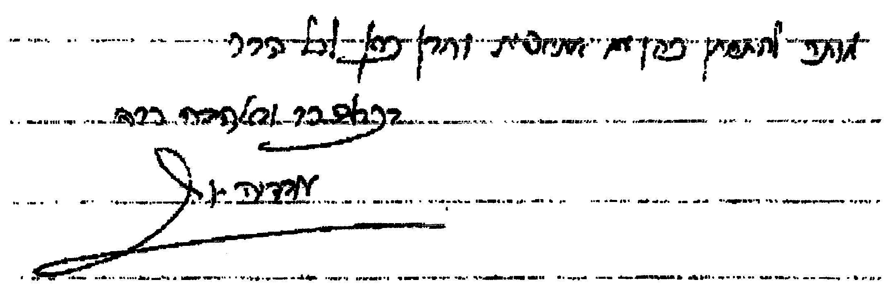

טרם נפתח, רצוננו להדגיש בס"ד שני דברים:
א. לדעתי העניה נראה, שעדיין קשה לנו לתפוס את מלוא גדלותו של רבינו זצ"ל וזיע"א. מכל מקום נראה שמזמן מרן הב"י זצ"ל וזיע"א לא היו הרבה גדולים כמותו, מלבד מרנא ורבנא הגר"א זצ"ל וזיע"א, ועוד כמה גדולים. בקיאותו העצומה בראשונים ובאחרונים לא ידעה גבולות, וזאת נוסף לעמקותו בהלכה, כך שגדלות כזו בתורה אינה דבר המצוי כל כך. וכן זכה רבנו להפיץ את התורה בדורנו בצורה נפלאה, הן לצעירים והן לזקנים, הן ל"עמך" בית ישראל והן לדיינים ושאר גדולי תורה.
ב. היו שטענו מדוע לכתוב על רב שרבים מאיתנו לא הזדהו עם דרכו והשקפתו בעניני האחיזה בארץ ישראל, הנהגות הכלל וכדומה. שהרי לגדולי דורנו מהציבור הדתי – לאומי היו גישות אחרות משלו בעניני הכלל, בענינים הממלכתיים והציבוריים, במישורים המדיניים, הבטחונייים וכדומה. אך לעניות דעתי למרות שאכן היו חילוקי דעות (ולעיתים אף חילוקי דעות חריפים) בענינים אלה, בכל אופן את גדלותו העצומה בתורה אי אפשר לעמעם, ולא ניתן להתעלם ממנה, וזאת הוא רכש לא רק על ידי הכשרון הנדיר שהיה לו, אלא מתוך עמל עצום של תורה. ונוסף לכך אין לשכוח את מסירות הנפש שלו לקרב את המוני ישראל לאבינו שבשמים ולרומם את קרן ישראל.
לאור זאת בס"ד אזרתי חלצי, והחילותי לכתוב קווים לדמותו, דבר הבלול הן בהבאת תמצית שיטתו הפסיקתית, הן מפסקיו ששאלתיו באופן אישי במשך שנים רבות, פנים אל פנים, והן סיפורים אישיים אודותיו. וה' יעזרנו למען שמו, שלא תצא תקלה על ידינו (יש להעיר, שהיוזמה הראשונה לכתיבת הדברים היתה בשל פניה של עיתון מסוים, שאתראיין אצלם יממה לאחר לויית רבנו, כדי לכתוב כתבה על רבינו זצ"ל. אך עקב אי הסכמתם לכתוב בשיפולי הראיון ש"לדעת המרואיין, הדף טעון גניזה", לא הסכמתי שיפורסמו הדברים שנאמרו בראיון. ומכל מקום הדבר היה לברכה, מעז יצא מתוק, ולכן החלטנו בס"ד לפרסם את הדברים כאן, וביתר הרחבה).
הנושאים שבס"ד נדבר אודותם הינם:
פרק א': תמצית דרכו ההלכתית.
פרק ב': יראת השמים הטהורה שלו ומידותיו (כולל התמדתו בתורה ופעילותו להפצת התורה).
פרק ג': הקשר שלו עם הציונות הדתית, רבניה ותושבי יש"ע.
פרק ד': הקשר האישי שלי עמו (סיפורים).
פרק ה': מפסקי ההלכה שרבנו זצ"ל אמר לי.
(כל הזכויות על קונטרס זה שמורות בס"ד לעורך. מותר לצטט בכתב או בע"פ חלקים מהקונטרס בתנאי שיזכירו שהדברים נלקחו מספר זה.)
רבות נכתב ויכתב על דרכו ההלכתית של רבינו זצ"ל. הן מה שכתב בעצמו בספריו הרבים, בהקדמותיהם ובגוף הספרים, והן ע"י בניו ושאר שומעי לקחו. מ"מ פטור בלא כלום אי אפשר, בפרט שזה היה רצונו ומשאת נפשו, להפיץ את פסקי מרן הב"י ושיטתו. לכן בס"ד נכתוב בקיצור את תמצית שיטתו ההלכתית, ואידך זיל גמור בשאר הספרים [ראה למשל בספרו של בנו, הגר"י יוסף שליט"א, עין יצחק (ח"ג עמ' ש"ד ואילך), וכן באנציקלופדיה התלמודית (כרך ל', בראשו). ואף אנו לקחנו מעט מים משם].
ידועה שיטתו של רבינו, שיסודותיה חיזוק וביצור דרכו של מרן הבית יוסף זיע"א, עליו נשען כל בית ישראל. וכבר הביא רבינו זצ"ל הוכחות רבות מיני ים מדוע אזלינן דוקא בתר מרן הב"י. ויש לזכור אשר תחילה נשא מרן את כליו של רבינו הגדול הרמב"ם זיע"א במשנה כספו. והלא הרמב"ם היה המשך בית מדרשו של רבינו הרי"ף זיע"א, שהיה מיד לאחר תום תקופת הגאונים. ולאחר מכן בביתו ובבדקו נשא מרן את כליו של רבינו הטור, שהוא המשך אביו הגדול רבינו הרא"ש זיע"א, ששימש את גדולי אשכנז, המהר"ם מרוטנבורג הי"ד וזיע"א, ושאר הגדולים, והיה חלק מבית מדרשם של בעלי התוספות [וראה בשם הגדולים (ערך כסף משנה), שי"א שחיבור הב"י קדם לחיבור הכס"מ]. וא"כ מרן הב"י איחד ברוחו, בתורתו ובקדושתו את שני בתי ההוראה הגדולים של ספרד ואשכנז, ומתוך זה בס"ד עצומה זכה לאחד הכל בספרו הגדול השולחן ערוך.
אלא שממש באותו דור ובאותו מקום, באמצע הדרך מעיר דוד אל ארם צובא, הלא היא העיר המוצפנת והמסותרה, עיה"ק צפת"ו, פרצה לה והחלה בהתגלותה מחדש תורת הסוד, על ידי רבינו האלקי רבי יצחק לוריא אשכנזי, זצ"ל וזיע"א (הלא הוא האריז"ל). ובמשך השנים רבו כמו רבו הפוסקים הספרדים שקיבלו את תורת הסוד כאבן פינה שעל פיה ישק כל דבר.
אמנם רבינו זצ"ל רוח אחרת היתה עמו, והיא לחזק את בדק הבית שעיקרו מושתת עפ"י פסקי גדולי הפוסקים הראשונים, הלא המה הרי"ף, הרמב"ם והרא"ש, ושעל פיהם הכריע ופסק מרן בשולחנו הטהור את ההלכות לכלל ישראל. ואכן רבינו בספריו מביא עשרות רבות (אם לא מאות) מגדולי האחרונים שנטו קו, שלעולם יש להכריע דוקא כדברי השו"ע, ולא עפ"י הקבלה [ר' יבי"א (ח"א חאו"ח סי' ג')].
רק אדם בעל שיעור קומה עצום בתורה, ביראת שמים ובאהבת ישראל, היה יכול לשנות את המצב הקיים, שבו גדולים רבים פסקו כדעת המקובלים, וכן בארצות הפזורה נהגו העם לילך עפ"י מנהגיהם שהושתתו על פסקי גדולים שחיו באותו מקום (כגון בגלויות תימן, מרוקו ושאר ארצות המגרב, מצרים, דמשק וארם צובא, ארצות הבאלקן, וגלות בבל המעטירה). ואכן בשל קיבוץ הגלויות שהתברכנו בו בס"ד במאת השנים האחרונות, הביאו עמהם המוני בית ישראל מנהגים שונים ושיטות פסיקה שונות, ורבנו בעוצמת תורתו שינס מותניו והשתדל בכל כוחו לאחד את הפסיקה לספרדים ובני עדות המזרח, ולהנחיל את תורת מרן הב"י לכל שכבות העם [ראה יבי"א (ח"ה חיו"ד סי' ג'). אמנם לדבר זה היתה התנגדות מסוימת בקרב רבים, אך אין המקום לפרט זאת כאן].
בס"ד נציין כמה נקודות עיקריות בדרך לימודו ופסיקותיו הבולטות:
במיקרים רבים מאוד, תוך חתירה לאמת ההלכתית, הגיע רבנו למסקנה שיש להקל, דכוחא דהתירא עדיפא. אין זה אומר ח"ו שחתר להקל בכל מחיר, אלא שלמסקנות אלה הגיע תוך צלילה לדברי הפוסקים ובירור ההלכה לעומקה. דבר זה סייע מאוד לקרב את המוני עמך בית ישראל אל התורה הקדושה, והיה זה מנוף אדיר לרומם מבחינה רוחנית אף את העם שבשדות.
בקיאותו העצומה של רבנו זצ"ל לא ידעה גבולות. עינו הבדולח שטה במרחבי כל התורה כולה: התורה שבכתב, וכל ספרי התורה שבעל פה. החל מהספרים הקדמונים, שני התלמודים, הן הבבלי והן הירושלמי, ספרות הגאונים כולה, ספרי הראשונים, עד ספרי אחרוני האחרונים, בני דורנו אנו. ספרים רבים שכמעט ואבד ח"ו זכרם, הרים מתהום הנשיה, בבחינת מת מצוה (ח"ו), ושיבצם בספריו. זכרונו האדיר גרם לכך שכמעט לא היה ספר שדן בנושא שבו עסק רבנו, ורבנו לא הזכירו. את הכל ידע [מסופר שבצעירותו, סמוך לחנותו של אבי רבנו, היתה חנות ספרים. בכל יום היה רבנו מבקש מבעל החנות ספר אחד, מהראשונים או מהאחרונים, ולמחרת מחזיר הספר לבעל החנות. פעם היה זה ספר האגור, ופעם ספר הכלבו, ספר הנייר וכדו'. פעם אחת צחק בעל החנות על רבנו, ושאלו מדוע לו לשאול הספר רק ליום אחד, שיקחהו לכמה ימים, עד שיעיין בו היטב, ואז יחזירהו. ענהו רבנו בענווה, כי במשך יום זה בלבד הוא מספיק ללמוד את כל הספר. תמה בעל החנות על כך והחליט לבחון את רבנו. ולמרבה הפלא נוכח שאכן רבנו "בלע" את כל הכתוב בספר, וידע היטב את כל הכתוב בו.
ועוד בענין זכרונו של רבנו. פעם חיפשו בספרי ההלכה מקורות לפסק מסוים. ע"י בדיקה ב"פרוייקט השו"ת" מצאו שעשרים ושמונה שו"תים דנים באותה שאלה. ומששאלו את רבנו על כך, מנה להם רבנו רק עשרים ושבעה שו"תים שדנים באותה שאלה, והיינו החסיר רק שו"ת אחד, ואותו שו"ת היה... יביע אומר, שאותו לא החשיב רבנו.
ועוד אזכיר מה ששמעתי מבנו של בעל המעשה. כשהדפיס רבנו את שו"ת יבי"א חלק ראשון, היה זה בדפוס האחים אביקסיס (דפוס "המערב"). עבודת הדפוס היתה אז מאוד לא משוכללת (היו יוצקים אותיות עופרת וכך יוצרים את לוח הדפוס). וכך, תוך כדי העבודה הקשה, נעלמה קבוצת דפים, של כתב ידו של רבנו, שהיו אמורים להדפיסה. רבנו לא ידע מכך, אך שם לב שפניו של המדפיס נפולות. משהפציר בהם, נודע לו על גודל האבידה. התיישב רבנו בדפוס עצמו והחל לכתוב ולשחזר את הכתוב בדפים שאבדו, וכך השלים את החסר. לאחר זמן מצאו את כתבי היד האבודים, ומשהישוו בין מה שכתב רבנו בבית הדפוס לבין כתבי היד האבודים, התברר שכתשעים וחמישה אחוזים מהדברים האבודים, הצליח רבנו לשחזר בכוח זכרונו. כך שמעתי בעצמי מבנו של המדפיס.
ואגב זאת נציין שאומרים העולם, שיש גדולים בעלי בקיאות גדולה, והם נקראים "זָכרָנים". אך רבנו זצ"ל, וכן הגר"ש גורן זצ"ל היו "צָלמָנים" – והיינו מצלמים במוחם את הכתוב לפניהם. ודי בכך.
בקיאותו זו של רבנו סייעה לו רבות ליישם את שיטת פסיקתו, שאין לנו בדורותינו הכח לפסוק הלכה רק ע"י דיוק בראשונים, או על פי סברתנו בלבד [ראה ע"כ באורך בהקדמה ליבי"א (ח"א וח"ג)]. בשל בקיאותו העצומה הוא ידע לדלות מספרי האחרונים את פירוש הדברים שכתבו הראשונים, כדי שלא לסמוך על הבנתנו בלבד בדברי הראשונים.
כמו כן על ידי בקיאותו העצומה ועמקותו הגדולה מצא רבנו להקות להקות של ראשונים שנטו קו בדבר מסויים (כגון שמצא כשלושים ראשונים שפסקו כדעת רבנו תם לענין השקיעה וצאת הכוכבים, וזו נ"מ לענין צאת השבת), וכן חבל נביאים של עשרות אחרונים, ועל פיהם סמך את פסקיו, הן לקולא והן לחומרא, באופן שלחולקים עליו היה קשה להתמודד עם מסקנותיו.
עוד דבר שלימדנו רבנו היה הלימוד והשימוש בכללי הפסיקה שכתבו הגדולים הקדמונים. ידיעת כללי הפסיקה הינה דבר הכרחי לכל פוסק, כשבלעדיו אי אפשר לכוון לאמיתה של תורה. שהרי כמעט בכל דבר ישנן כמה דעות בפוסקים, הללו אוסרים והללו מתירים, הללו מתירים בתנאים שכאלה והללו בתנאים אחרים. ואף שיש לנו את השולחן ערוך שכבר התקבלו פסקיו, הרי אף מרן בספרו זה לעיתים הביא כמה דעות, והדברים צריכים הכרע בלשונו כיצד לפסוק. וישנם דברים שלא הוזכר דינם בשו"ע, ורק האחרונים דנו בהם (ובפרט בעניני החשמל והטכנולוגיה המתקדמת), ובזה הפוסק צריך לדלות את יסודי הלכה זו מדברי הפוסקים הקדמונים, ולהשליך את היסודות האלה אל המציאות המתחדשת עפ"י כללי הפסיקה, וזאת לאחר שראה לאן רוח אלקין קדישין נושבת בשורשי הלכה זו (כעין זאת ר' בהקדמת מרן לס' הב"י), ועפ"י זה להכריע במקרה שלפניו.
כל זה לימדנו רבנו הן בספריו הרבים, ולי אישית בפרט בשיעוריו הרבים ששמעתי ממנו. שאף שבשיעורים דיבר בנחת, בשלווה, והיית מרגיש כאילו אתה שט בנחל הזורם ברוגע, בכל אופן בהירות השיעור יכלה להקנות לשומע דברים עמוקים ומסובכים כאילו הינם דברים פשוטים. כך נכנסו הדברים העמוקים לשכלנו, כשרבנו מסביר בטוב טעם ודעת את הסברא של כל אחת מהשיטות, ומראה לנו כיצד יש ללמוד את דברי הראשונים לאמיתתן, וכן כשהוא שוזר מחלוקות ראשונים רבות עם כללי הפסיקה, עד שאתה מגיע למסקנה ההלכתית הסופית. וכך אתה לומד כיצד נכנסים לסוגיה עפ"י הבנת הראשונים את הגמרא. מהי דעת רוב הראשונים להלכה, ועפ"י כללי הפסיקה אתה גם יכול להכריע בדבר, ואפילו במקרים שנראה שישנן לכאורה סתירות בשלחן ערוך.
כפי שכתבנו לעיל, הרי שעמוד התווך של פסיקת רבנו היתה הסתמכותו על פסקי מרן הב"י בספרי הבית יוסף והשלחן ערוך. אמנם לעיתים חריגות נטה רבנו מדרך זו, וכפי שכבר כתב בנו, הגר"י יוסף, בספרו עין יצחק (ח"ג. קבלת כללי מרן השו"ע. מהדו' תשס"ח דף ד"ש ואילך). עיי"ש שמנה יותר מחמישים דוגמאות למה שנוהגים הספרדים שלא כדברי השו"ע (אמנם זאת מתוך אלפי מיקרים שכן עושים כדברי השו"ע).
ונראה בס"ד שישנן כמה סיבות עיקריות להא שלעיתים אין רבנו פוסק כמרן:
ראשית, בעניני תפילה. למרות שמרן הוא מרא דאתרא דארעא דישראל, מ"מ בעניני תפילה אנו נוהגים כדעת רבינו האריז"ל, שהוא ידע יותר מכל את מהלך התפילות בשמים (כפי ששמעתי טעם זה בשיעור מרבנו זצ"ל). ולכן למשל אין הספרדים נוהגים לומר בתפילת שחרית את פרשת המן ועשרת הדברות, את פרשת הכיור ותרומת הדשן, למרות שמרן כתב בשו"ע (סי' א' סעי' ה' וט') לאמרן [ור' יבי"א (ח"י חיו"ד סי' ח')]. ורבות הדוגמאות כעין זו.
גם בעניני ברכות לעיתים פסק רבנו שלא כדעת השו"ע, מטעם ספק ברכות להקל. וכדוגמא לכך יש להזכיר את דברי מרן בשו"ע (סי' ז' ס"ג) שאם הטיל מים ולא בירך "אשר יצר", והסיח דעתו מלהטיל עוד מים, ואח"כ נמלך בדעתו והטיל מים פעם נוספת, שעליו לברך ב' פעמים "אשר יצר", והוא נסמך ע"ד כמה ראשו' (עיי"ש בב"י). אמנם רוב ככל האחרונים חלקו ע"כ, ומשום סב"ל פסק רבנו כד' רוב האחרו' שאין לברך במקרה זה אלא רק פעם א' "אשר יצר" [ר' ילקו"י (חאו"ח סי' ז'). וע"ע ביבי"א (ח"ז חאו"ח סי' מ"ד סק"ז)].
לא רק בעניני תפילה אלא גם בענינים אחרים לעיתים פסק רבנו שלא כד' מרן בשו"ע אלא כדעת האריז"ל. וכגון בענין מה שכתב מרן בשו"ע (סי' ח' סעי' י"א) שעיקר מצוות לבישת טלית קטן הינה שילבשנו על בגדיו. אלא כתב רבנו שהמנהג הוא ללבוש הט"ק דוקא תחת לבגדיו, וכמו שכתב מהרח"ו בשער הכוונות (דרושי ציצית, דרוש ו'). ר' ע"כ ביבי"א (ח"ט חאו"ח סי' ק"ח סקי"ח).
לעיתים פסק רבנו שלא כדעת מרן בשו"ע בשל הטענה, שאילו מרן היה רואה את דברי הקדמונים המצויים בידינו כיום, הווה הדר ביה ופוסק כמותם. דוגמא לכך הינה מש"כ מרן הב"י בשו"ע (סי' מ"ו ס"ו) שאמנם יש נוהגים לברך את ברכת "הנותן ליעף כח", אך אין דבריהם נראים, ואין לברכה. ע"כ. ועיי"ש בב"י מדוע אין לברכה, בעיקר משום שלא נזכרה בש"ס, ולא ברמב"ם, בסמ"ק וברוקח. אלא שלד' רבנו [ר' יבי"א (ח"א חאו"ח סי' כ"ח סק"ה. וח"ו חאו"ח סי' ח' ס"ק א' וב')], כיוון שברכה זו נזכרה בסידורי הגאונים, ובכללם בסידור רב עמרם גאון, וכן בדברי כמה ראשונים, כסמ"ג, מחזור ויטרי, רבנו האבודרהם והטור, לכן אמרינן שאילו מרן היה רואה את דבריהם היה פוסק לאומרה (וזאת נוסף לכך שגם המקובלים כתבו לאומרה). וכהאי גוונא רבנו לא פוסק כדברי מרן בשו"ע (סי' תרי"ז ס"ג), שספירת ג' ימים וז' ימים לענין קולא ליולדת ביוה"כ, שאין מונים ימים אלה מעת לעת. אלא רבנו פוסק שמונים ימים אלה מעת לעת, והיינו לקולא. וזאת מהטעם שאילו מרן היה רואה את הראשונים שהקלו בכך, היה גם מרן מקל כמותם (שכן שמעתי מרבנו בשיעור, וכן הורה לי לדינא. וכ"כ רבנו בכמה דוכתי).
לעיתים פוסק רבנו שלא כד' השו"ע, מהטעם, שלמרות שמרן פסק לחומרא במחלוקת ראשונים אחת, וכן הכריע בשו"ע להחמיר במחלוקת ראשו' אחרת, אך כששתי מחלוקות ראשונים אלה שייכות למקרה מסויים אחד, דעת רבנו שיש לצרפן ולהקל.
וישנם עוד מקרים רבים שמרן בשו"ע פוסק כדעה מסוימת בראשו', אך המנהג המיוסד ע"ד הפוס' או המקובלים אינו כך, ופסק רבנו שלא כדברי השו"ע.
ויש עוד להאריך בדברים אלה, ואכ"מ.
ולסיום פרקנו נביא בס"ד כמה מפסיקותיו הבולטות של רבנו ז"ל, חלקן לקולא וחלקן לחומרא.
רבנו סמך בשתי ידיו על "היתר המכירה" בשביעית, ביסס את היתרו על יסודות נאמנים, מראשונים ואחרונים. בנימוקים הלכתיים טהורים דחה את כל טענות המחמירים בדבר, ולא השאיר פקפוק בדבר, ושאף בני תורה יכולים להקל בדבר לגמרי. נוסף על מה שהעלה את היתרו על הכתב [ר' יבי"א (ח"י חיו"ד סי' מ"ד) וילקו"י (חלק מצוות התלויות בארץ. ח"א עמ' תרל"ט – תשט"ו)], שמעתי ממנו את השקלא וטריא בענין בשיעוריו בכל מוצאי שבת (בביכ"נ "היזדים") במשך כחצי שנה תמימה. יש לציין שגם בפסק זה רבנו גילה את דעתו האמיתית ללא חשש, למרות שישנם פוסקים רבים, בעיקר במגזר ה"חרדי", שאין דעתם נוחה מכך.
מצאנו בבטאון המועצה הדתית רמת גן (תשרי תשע"ה, עמ' 24-25, "גאולה של מכירה"), מאמרו של (סא"ל מיל') הרב מנחם מנשה מנהל מחלקת הכשרות:
כשפגשתי את מרן הראשל"צ הרב עובדיה יוסף זצ"ל, לפני שתי שמיטות, שאלתיו: "מה להעדיף בשמיטה הקרובה, היתר מכירה, אוצר בי"ד או תוצרת גוי, כאשר הבהרתי שאין לי כל בעיה, לא טכנית ולא כלכלית, להשתמש באחד הדברים, השיב לי הרב בקצרה: היתר מכירה.
המום מהתשובה, ניסיתי שוב לחדד שאני גר במקום (שומרון) שאין לי בעיה לקנות תוצרת גוי, והרב משיב שוב: היתר מכירה. ניסיתי שוב, ובתחילת דברי גוער בי מרן זצ"ל, ואומר: "לא הבנת? אמרתי לך היתר מכירה!". עד כאן דבריו.
רבנו דן באריכות בענין מעמדם ההלכתי של יהודי אתיופיה [ר' יבי"א (ח"ח חאה"ע סי' י"א)], והעלה למסקנה שדינם כיהודים ויש לקרבם ליהדות. והוסיף שאינם צריכים כלל גיור ואפילו לא לחומרא [וראה באנציקלופדיה התלמודית (חלק ל' בהקדמה), שכתבו שמכל מקום הגרע"י זצ"ל המליץ על גיורם לכתחילה, כדי שיתקבלו כיהודים על דעת כל הקהילות בישראל].
ופה איתי המקום להזכיר מקרה שקרה לפני כמה שנים מעטות (בערך בשנת תשס"ח, ואולי קודם מעט). בחור באחת הישיבות בא לראש הישיבה שלו (הרה"ג ש. אב.) לבשר לו על אירוסיו. אמנם על שמחתו העיבה העובדה שהוא הינו כהן, וארוסתו הינה בחורה בת ליוצאי אתיופיה. וכיוון שהוא שמע (לאחר מעשה) שיתכן שישנה בעיה בכך, כיוון שי"א שיוצאי אתיופיה צריכים גיור לחומרא (או שלא לחומרא), והוא כהן, הרי שיתכן שישנה בכך בעיה של נישואי כהן עם גיורת. ואם היא לא תתגייר, יתכן שאדרבא, הבעיה תחריף, אם יש מהרבנים שיפסקו שהיא בכלל גויה, ח"ו.
ואכן ראש הישיבה שלו בירר אצל רבנו כיצד לנהוג במקרה זה, שהרי רבנו פסק שרק לחומרא הינם צריכים גיור. וא"כ ס"ל שמעיקר הדין הם אינם צריכים גיור כלל. ורבנו כתב לו מכתב באופן מיוחד, לכל רושמי הנישואין, שלא יחששו מכך, וכך כתב רבנו:

"מותר להתחתן כהן עם אתיופית והבן כהן לכל דבר
בכבוד רב ובאהבה רבה
עובדיה יוסף".
ע"כ לשון המכתב בכתי"ק. ומבוארים הדברים, שא"כ רבנו ס"ל מעיקר הדין יוצאי אתיופיה הינם יהודים לכל דבר, ומש"כ לגיירם לחומרא הוי באמת לחומרא, ובמקום הצורך אינו חושש לגיירם. ואף שבאמת זו מחלו' גדולה בין גדולי דורנו אי מעיקר הדין צריך לגיירם, מ"מ זו דעת רבנו. ואכמ"ל.
בענין התרת עגונות (שזו אחת הבעיות הסבוכות ביותר בעולם ההלכה) היה רבנו פועל בכל כוחו וללא הרף. מסופר למשל שפעם אחת הובאה לפניו שאלה של עגונה בערב שבת. רבנו ישב כל השבת ודן בשאלה זו. מיד לאחר תפילת שחרית באותה שבת אכל רבינו רק לחם וגבינה, ונמנע מאכילת בשר ושאר תבשילים כדי שלא תחטפנו תנומה, ויוכל לנצל את כל שעותיו כדי לבדוק בפוס' הניתן להתירה. ואכן עד מוצאי שבת הגיע רבנו למסקנה הלכתית להקל, ובמוצאי שבת ישב לכתוב את תשובתו בענין. כמו כן פעל רבנו רבות להתיר את העגונות הרבות בשל מלחמת יוה"כ בשנת תשל"ד. רבנו נידד שינה מעיניו כמה חודשים, ויחד עם בית דין שכלל גם את הרבנים הצבאיים הם התירו יותר מתשע מאות עגונות, כך שלא נותרה עגונה אחת שלא הותרה עפ"י כללי הפסיקה שכתב רבנו, ובכוחא דהיתרא.
בהקשר לענין זה יש להזכיר גם את פסקיו השונים בעניני ממזרים, שגם בהם העלה להקל בכוחא דהיתרא. והיה מזכיר את דברי המדרש שהקב"ה מרחם ועוזר לממזרים, כיוון שאין הם אשמים שנקלעו לצרה זו.
גם בענינים הטכנולוגיים המתחדשים השקיע רבנו את ראשו ורובו. וכך היה מהראשונים שהתירו שימוש בדוד שמש בשבת לצורך רחיצת הפנים, הידיים והרגליים, שטיפת כלים וכדומה [וכמדומה שזו תשובתו הארוכה ביותר שכתב. ר' ע"כ בשו"ת יבי"א (ח"ד סי' ל"ד), שדן שם בפרט בענין איסור גרמא בדרבנן. תשובה בת כארבעים עמ'. וע"ע ביבי"א (ח"י עמ' קט"ז)]. ובענין זה נזכיר גם את מסקנתו להקל ולהתיר (לפחות לספרדים) רחיצת כל הגוף ביום טוב (ולא בשבת!!) במים חמים שחוממו בדוד שמש. ראה ע"כ מה שכתבנו בס"ד במקראי קודש הל' רה"ש (פי"ג הערה ט"ז) וע"ע בחזו"ע (הל' יו"ט. עמ' מ"א ומ"ב)]. כמו כן התיר את השימוש בשבת בפלטה חשמלית הדולקת מערב שבת, וכן את פתיחת דלתו של המקרר החשמלי בשבת [ר' יבי"א (ח"ו חאו"ח סי' ל"ב) ויחו"ד (ח"ב סי' מ"ה)], אף כשאינו פועל (ואגב, היתר זה אמור לגבי המקררים כפי שהיו בעבר. אך היום עם התקדמות הטכנולוגיה, ישנם מקררים שפתיחת הדלת שלהם בשבת כרוכה באיסורים גמורים. ואכמ"ל).
רבנו פסק בענין השיעורים והמידות כשיטת הגרא"ח נאה זצ"ל, שהיא השיטה המקובלת מקדמת דנא הן אצל הספרדים, וכן הוא המנהג בירושלים אף אצל האשכנזים מאז ומתמיד [ראה יחו"ד (ח"א סי' ט"ז)]. וזאת הן לגבי מידות האורך והן לגבי מידות הנפח. ובענין זה חלק על דברי החזון איש ששיעוריו שונים בתכלית משיעורי הגרא"ח נאה.
רבנו אסר לנשים נשואות את השימוש ב"פאה נכרית" ככיסוי ראש. אמנם התיר להן ללכת ברשות הרבים כשראשן מכוסה במטפחת, ואילו שערן כלפי הפנים מגולה ברוחב שתי אצבעות [וראה ע"כ בס' אוצר דינים לאשה ולבת (להגר"י יוסף שליט"א. פל"ז סט"ו עמ' שס"ח ואילך), וכ' שם וז"ל: נשים הנוהגות לגלות אצבע או שתים משערות ראשן כלפי הפנים, אין למחות בידן, שכן מנהגנו וכו'. ע"כ. עיי"ש. ונאמרו ב' טעמים להיתר זה של גילוי ב' אצבעות: 1) שב' אצבעות זה עדיין לא רוב טפח שהוא שמונה ס"מ. 2) שכיוון שרוחב המצח הינו כב' טפחים, אזי אם הרוחב המגולה הינו כב' אצבעות, סה"כ הוי טפח מרובע מגולה. ע"כ. אמנם ידוע שלפי הזוה"ק אסור לאשה לגלות אפי' שערה אחת מחוץ לכיסוי ראשה. אך רבנו זצ"ל לא פסק כך]. ואכן בענין איסור השימוש ב"פאה נכרית" היה רבנו תקיף מאוד מאוד. ראה שו"ת יבי"א (ח"ה חאה"ע סי' ה'), והליכות עולם (ח"ד עמ' ע"ר). וזכורני שפעם בשיעור במוצאי שבת בביכ"נ "היזדים" דיבר רבנו בענין זה, וכדרכו היה חריף מאוד, וחרצובות להבות אש יצאו מפיו. ואשתי שהיתה נוכחת בשיעור זה בעזרת הנשים סיפרה לי, שכל הנשים שנכחו בעזרת נשים, היו כולן לבושות במטפחת ראש, מלבד אשה אחת שלבשה פאה נכרית. אך בשל דבריו הלוהטים של רבנו הרגישה אשה זו כאילו האדמה בוערת תחתיה, והיא ברחה מבית הכנסת תוך כדי דבריו של רבנו.
עוד נזכיר שרבנו חיזק את המחמירים עפ"י פסקי רבנו תם בענין חישוב זמן צה"כ, וכן בענין הנחת תפילין שסדר הפרשיות כר"ת, נוסף להנחת תפילין לשיטת רש"י [ראה יבי"א (ח"ב חאו"ח סי' כ"א. וח"ז חאו"ח סי' מ"א). וחזו"ע (שבת ח"א עמ' רס"ח ואילך)].
בענין חישוב זמן צה"כ לפי ר"ת, ידועה מחלו' הפוס' אי אזלינן בתר שיטת הגאונים גבי חישוב השקיעה וצה"כ, או בתר דעת ר"ת. ואכן מרן בשו"ע בחלק אורח חיים (בסי' רס"א ס"ב) פסק כד' ר"ת, אלא שמדבריו בחלק יורה דעה (עיי"ש סי' רס"ב סעי' ה' וו', וסי' רס"ו ס"ט) נראה שפסק כגאונים [וע"ע בבה"ל (סי' רצ"ג), שמשמע ג"כ שמרן פסק כגאונים]. ומ"מ לדעת רבנו (ביבי"א ח"ב סי' כ"א) יש להחמיר במוצאי שבת כד' ר"ת, ובשל כך שבת יוצאת מאוחר הרבה יותר מהמקובל [וראה מה שכתבנו בס"ד ע"כ במקראי קודש הלכות יוה"כ פי"ב הערות ט"ו וט"ז)]. ושמעתי שרבנו היה מצטער ואומר, שרבים הולכים אחר פסקיו, ובפרט שבדר"כ הוא מיקל. אך במקום שלדעתו יש להחמיר, כמו למשל לגבי צאת השבת לפי שיטת ר"ת, בזה אינם הולכים כדעתו [ואגב זאת אודיע נאמנה, שסיפר לי בעל תשובה אחד, שלימים נעשה אחד מעוזריו הבכירים של רבנו, שכשהוא היה גר באחד מישובי צפון השומרון, ושאז היה בשלבים הראשונים בדרכו אל שמירת התורה והמצוות, שאל הוא את רבנו, כיצד עליו לנהוג בכגון דא, כיוון שאם יצא מביתו שבשומרון לאחר צאת השבת לשיטת רבנו תם, יגיע הוא מאוחר מאוד לשיעור של רבנו בביהכ"נ "היזדים" בירושלים. ופסק לו רבנו שלענין זה לא ינהג כשיטת רבנו תם, אלא יצא מביתו לשיעור לאחר צאת השבת לפי שיטת הגאונים. ונראה לי שרבנו היקל לו בכך כדי שקודם כל יתחזק בשמירת התורה והמצוות, ורק אח"כ יאחז גם בענין צאת השבת כדעת ר"ת].
גם בענין הנחת תפילין כשיטת רבינו תם (בסדר הפרשיות), היה רבנו מחזק את העם להניח נוסף לתפילין דרש"י גם תפילין דר"ת. ושמעתי שרבנו היה אומר, שמש"כ מרן (או"ח סי' ל"ד ס"ב) שירא שמים יצא ידי שניהם, ויעשה ב' זוגות תפילין ויניח שניהם, לכאו' זה אמור לאו דוקא לחסידים. דמי יכול לטעון ולומר שאינו ירא שמים [אך אינני זוכר ששמעתי זאת ממנו במפורש. וכנראה ששמעתי זאת בשמו. ומ"מ קצת קשה ע"כ, שהרי מרן (בסי' ל"ד ס"ג) כתב במפורש שדין זה דהנחת תפילין של רש"י וגם של ר"ת, שיעשה כן רק "מי שמוחזק ומפורסם בחסידות", וא"כ לאו לכו"ע אמור ד"ז. דניחא שאר דברים שכתב בשו"ע שיעשה אותם ירא שמים, כגון שלמצוות קריאת שמו"ת יקרא באמת שמו"ת, ונוסף לכך גם את פירוש רש"י (בסי' רפ"ה ס"ב), יש אולי מקום לומר את הדברים דלעיל. אך בני"ד רואים במפורש שרק לאנשים מיוחדים אמור ד"ז של התפילין. וצ"ע אי אכן הגרע"י זצ"ל אמר את הדברים הנ"ל].
ומ"מ לדעת רבנו [ראה יבי"א (ח"א חאו"ח סי' ג')] המניחים תפילין דרש"י וגם דר"ת, יניחום זה אחר זה ולא בבת אחת, וזאת אע"ג שאמרו בגמ' שמקום יש בראש לשני זוגות תפילין [ולי הקטן נראה מאוד שהצדק עם רבנו. שהרי אע"פ שכיום מייצרים תפילין שהבתים שלהם קטנים, מ"מ גודל הבתים – ללא המעברתא והתיתורא – הינו 2.0-2.2 ס"מ. ועם המעברתא והתיתורא קשה מצד המציאות שאכן יהיו שני הבתים, דרש"י ור"ת, במקומם הראוי בראש כפי ההלכה. ואני בצעירותי ראיתי תפילין ישנות, מלפני כמאה שנה, שיוצרו עוד בבגדד, וגודל הבית היה כסנטימטר אחד על סנטימטר אחד. ואע"ג שיש קושי רב לכתוב פרשיות לתפילין כאלה, וגם יש חשש שהאותיות תדבקנה, מ"מ בזה מובן כיצד בדורות קודמים יכלו להניח תפילין דרש"י ודר"ת בבת אחת].
עוד יש להזכיר את היתריו של רבנו בעניני טהרת המשפחה, כפי העולה מג' כרכי ספרו טהרת הבית, שבהם דחה חומרות שהשתרשו במשך השנים (גם אצל הספרדים), נגד דברי מרן השו"ע. אלא רבנו החזיר עטרה ליושנה גם בתחום זה, והעמיד את הדברים על עיקר הדין. ודבר זה נוגע אף בדברים המחודשים בתחום זה (כנייר סופג לאשה וכדו'). יצויין שדרכו להקל בענינים אלה סללה את הדרך לרבים רבים שאילולא כך לא היו שומרים על טהרת המשפחה, ובכך קירבם גם לשמירת הלכות חשובות אלה הנוגעות לאיסורי כרת [ראה טהרת הבית (בהקדמה לח"א, ובח"ב עמ' קנ"ד סוף הערה כ"ג)].
לפני שנסיים פרק זה נראה שמחובתי להזכיר את דעת רבנו בענין החידושים ההלכתיים – טכנולוגיים של מכון צומ"ת. שאמנם אנשי צומ"ת (שמסתמא כל כוונתם לש"ש בלבד, ובודאי שיש להם יראת שמים) טוענים שדעת רבנו היתה להסכים עמם בהפעלת מכשירי הגרמא בכלל, ובהפעלת פנס וטלפון גרמא בשבת ויו"ט בפרט [ר' ע"כ בתחומין (ח"א עמ' 515, ח"ב עמ' 55, חי"ג עמ' 139, וחט"ז עמ' 34)].
אלא שלפני כמה חודשים הביאו לי פסק הלכה שכתב הראשל"צ הגר"ש עמאר שליט"א, בו הוא דן גבי מכשיר הגרמא של מכון צומ"ת בכלל, ושל מכשירי הטלפון, הרמקול והקלנועית בפרט. וכתב במסקנתו: אחר עיון מעמיק וכו', עולה בבירור גמור ובלי שום ספק, שאין שום היתר להשתמש במכשירים חשמליים (ע"י גרמא, וכנ"ל – מ.ה.) ולהפעילם בשבת ח"ו. ואפילו באופן שאין בו הבערה וכיבוי, וכו'. ואשר על כן אסור להשתמש בטלפון, או מיקרופון (רמקול) או רדיו, וכל שאר המכשירים, לא בשבת ולא ביום טוב. וקל וחומר שאין להשתמש בשום פנים במכונית שנוסעים בה בשבת ונקראת "קלנועית", שמלבד שיש בה איסורי שבת רבים יש בזה גם חילול ש"ש נורא. וכו'. עיי"ש שהאריך בדברים חריפים נגד ההיתרים של מכון "צומת", וכתב שיש להתיר זאת רק במקום של ספק סכנת נפשות.
והבאנו כל זה, משום שבסוף הקונטרס הארוך הנ"ל שכתב הגר"ש עמאר שליט"א, הוסיף רבנו בכתב ידו, וזו לשונו המדוייקת: אני מסכים בכל לב לכל מה שנאמר לעיל על ידי ידי"נ הגאון הראש"ל רבינו שלמה משה עמאר שליט"א, שכל דבריו נאמרו בטוב טעם ודעת, על דבר אמת וענות צדק, לגדור גדר ולעמוד בפרץ. איישר חיליה לאורייתא, יגדיל תורה ויאדיר. עובדיה יוסף. עכ"ל. וכן הגר"צ בוארון שליט"א ג"כ הוסיף את חתימתו שם ע"כ. נמצאנו למדים שאף רבנו נמנה עם המתנגדים להיתרים של מכון "צומת". ושמא במשך השנים ראה שהם מיישמים את ההיתרים גם במקרים שלדעתו א"צ להקל בהם, ולכן חזר בו ממ"ש להתיר לפני עשרות שנים [ולענ"ד נראה בס"ד (וכן אמר לי ת"ח אחד המבין בענינים אלה), שעצם הגרמא של מכון "צומת", הנקראת "המשכת מצב", היא נכונה כשלעצמה מבחינה הלכתית. אך כיוון שהם מיישמים זאת במיקרים שלדעת רבים א"צ להקל בהם, לכן ישנה התנגדות גדולה כל כך נגדם. וראה ע"כ מה שכתבנו בס"ד באורך בקונטרס קדושת השבת (ח"א, ובפרט בהערה כ"ז) בענינים אלה. ושעל אחת השאלות ששאלנו את הרה"ג ישראל רוזן שליט"א, ענה לי: "כאן מצאת את מקום תורפתי". ולא זכיתי להבין. אם אכן גם הוא שליט"א מסכים שאין להשליך את היתריו למקרים האמורים שם, מדוע אינו מתקן הדבר. ומ"מ הרה"ג ישראל רוזן שליט"א העיר הרבה הערות על הפסק הזה של הגר"ש עמאר שליט"א, ונראה שהערתו העיקרית והחשובה הינה שכבכל מו"מ הלכתי, צריכים שני הצדדים להתדיין. ובני"ד, למרות הפצרותיו, לא הסכימו לדון עמו כלל לפני פרסום הדברים, ולא היו מוכנים לשמוע את טענותיו ההלכתיות, ושישנם מגדולי הרבנים שסמכו את ידיהם על מעשיו. אך כמובן שאני הקטן לא באתי להכריע בקונטרס זה בענינים אלה. ואכמ"ל].
בפרק זה נדבר על יראת השמים של רבנו זצ"ל, על התמדתו בתורה, ועל מאמציו להפיץ את התורה.
גדלותו העצומה של רבנו בתורה לא עמעמה כי הוא זה את תמימותו בעבודת ה'. אדרבא, הוא השתמש בגדלותו כדי לגדול גם ביראת שמים, ורתם אותה כדי להשפיע גם על אחרים ולחזקם ביראת שמים זו.
הבקיאות העצומה שהזכרנו לעיל לא היתה רק בספרות חז"ל והפוסקים. היא השתרעה גם על סיפורי צדיקים ומעשיות עממיות. כשהיה רבנו מוסר את שיעוריו, לא היה מצמצם את השיעור רק להלכה, אלא תמיד היה שוזר בו גם מעשיות מושכות לב.
בשיעורו הקבוע בבית כנסת "היזדים", שיעור שהתמיד בו עשרות שנים רבות, בכל מוצאי שבת, היה רבנו מלמד אותנו בתחילת השיעור כשעה ומחצה דברי הלכה, ולאחר מכן במתק לשונו היה מספר עוד כחצי שעה מדרשי חז"ל וסיפורי מעשיות הקשורים לפרשה. אופן דיבורו על מדרשי חז"ל וסיפורי הצדיקים היה כובש כל לב, ומחזק מאוד מאוד ביראת שמים תמימה. פשוט אי אפשר היה שלא להזדהות עם הדמויות שעליהן סיפר.
כאן נסטה מעט מהנושא, ונביא שתי דוגמאות לסיפור שסיפר רבנו על אמונה תמימה ומידת הבטחון בקב"ה.
סיפר רבנו, שבן לאחד מאדמו"רי חב"ד (שבמשך השנים נעשה גם הבן עצמו אחד מאדמו"רי חב"ד, ומסיבות המובנות בהמשך לא אנקוב בשמו), התחתן, וכנדוניה קיבל עושר רב. אביו ששימש עדיין כאדמו"ר, ביקש מבנו שלאחר החתונה יתן לו את כספי הנדוניה על מנת להשתמש בהם לצורכי צדקה והלוואות לעניים, ובבוא העת, כשירצה בנו, יחזיר לו את כספו. אך הבן סירב. במשך שבעת ימי המשתה שלאחר החתונה, קרה מקרה מצער, וכל כספי הנדוניה ירדו לטמיון. בא הבן – החתן אל אביו בבכי תמרורים, וסיפר לו על כך. ניסה אביו - האדמו"ר לנחם את בנו, אך יחד עם כך אמר לו: בא ואספר לך סיפור שאירע עמי בצעירותי, וממנו תלמד כיצד יש לנהוג ברכוש שניתן מהשמים, ומהי מידת הביטחון בקב"ה.
והחל האדמו"ר לספר לבנו: כשהייתי אברך צעיר, הייתי נודד בין העיירות כדי לחזק יהודים ביראת שמים וללמדם תורה. פעם בשעת ערב מאוחרת הגעתי לעיירה פלונית, ושאלתי אם ישנם יהודים בעיירה זו. אמרו לי שישנה רק משפחה אחת של יהודים בעיירה זו. משהגעתי לבית המשפחה קיבל את פני בעל הבית, יהודי חם וירא שמים. חיש מהר הביא לי עם אשתו, בעלת הבית, אוכל חם, הסיקו את התנור, וקיימו בי מידת הכנסת אורחים בצורה נפלאה. תוך כדי שיחתנו שאלתיו היכן לומדים בניו, והאם הם מקבלים חינוך יהודי אמיתי. נאנח בעל הבית וסיפר שבניו לומדים בבית הספר היחיד בעיירה, שבו כולם גויים. אך לאחר שעות הלימודים הוא מלמדם ברכות, תפילה, וקצת פרשת שבוע וכדומה.
שאלתיו מדוע אינו עובר לעיר הסמוכה, לעיר קראקא, שם יוכל ללמד את בניו בתלמודי תורה עם חינוך יהודי שורשי, כפי שעושים כל היהודים. וענה לי אותו יהודי שבשל הצורך לפרנס את משפחתו נשאר הוא בעיירה זו, בה יש לו בית מרזח, מוכר משקאות חריפים לאיכרים הגויים, ומתפרנס יפה למחייתו. שאלתיו כמה יהודים ישנם בקראקא. ענה לי שישנם שם כארבעים אלף יהודים. שאלתיו: האם הקב"ה יכול לפרנס ארבעים אלף יהודים בקראקא, ועוד כמה יהודים – בני משפחתך, אינו יכול לפרנס. שתק אותו יהודי. אני פניתי לחדר שהציעו לי בעלי הבית, לומר תיקון חצות ולישון את שנת הלילה, ובעלי הבית פנו גם הם לחדרם.
בערך בשעה שתים בלילה התעוררתי בבהלה לקול חריקת ארונות וגרירת חפצים כבדים. לא הבנתי את פשר הדבר, ומשפתחתי את הדלת נדהמתי לראות שפועלים רבים מפנים את חפצי הבית, ומעמיסים אותם על עגלות האמורות לעזוב את המקום. פניתי אל בעלי הבית, והלה אמר לי שדברי על חינוך הילדים חדרו ללבו, ואשתו והוא החליטו שאכן עליהם לשמוע בקולי, בשל היותי אברך בן תורה, ולעזוב את המקום לעיר קראקא, בה יוכלו להקנות חינוך יהודי לילדיהם. ומשהחליטו כך, אמרו ועשו. פנה היהודי אל שכנו הגוי, שמזמן כבר לטש את עיניו כדי לקנות את בית המרזח, סיכמו על המחיר, ומיד חתמו על שטר מכירה. הגוי שילם לו מיד את מלוא הסכום על מנת שלא יחזור בו היהודי מהמכירה.
הסביר אותו יהודי לאדמו"ר, שכיוון שהלה החדיר בו יראת שמים תמימה, ובטחון בקב"ה, לכן הגיעו הוא ואשתו למסקנה זו, וביצעו מיד את החלטתם.
עברו שנים, ושוב הגיע האברך (שבינתים כבר נעשה אדמו"ר) לאותה עיירה. משבירר על אותו בית מרזח, סיפרו לו הגויים שבעיירה, שלפני שנים רבות היה בית המרזח בבעלות של יהודי, ובלילה אחד הוא החליט למוכרו לשכנו הגוי, ואכן כמה ימים לאחר שנעשתה המכירה והיהודי עזב את העיירה, עלה כל בית המרזח באש, ולא נשאר ממנו שריד ופליט.
כך סיפר האדמו"ר לבנו החתן, ואמר לו: חבל שלא שמעת בקולי כמו ששמע בקולי אותו יהודי פשוט. אותו יהודי שמע בקול דברי חכמים, האמין בתמימות בדבריהם, היה לו בטחון בה' והרוויח גם בעולם הזה – שניצל מהשריפה שהיתה בבית המרזח, והרוויח גם בעולם הבא – שזכה לחנך את בניו כראוי ליהודי. ואתה לא שמעת בקול דברי חכמים, ולא היתה בך מידת הבטחון שכספי הנדוניה ישובו אליך לכשתצטרך אותם, ובסופו של דבר הפסדת את הכל.
כך סיפר לנו רבנו סיפור זה וסיפורים רבים אחרים, ועל ידי כך היה מחדיר בנו אמונה תמימה בה', ואת מידת הבטחון בו יתברך. הדברים היו יוצאים מלבו הטהור, ונכנסים ללב כל השומעים שהאזינו לדבריו בקשב רב.
ונספר עוד סיפור שסיפר רבנו.
בעיר אחת היה יהודי עני מרוד. כל ימי השבוע פרנס בקושי רב את משפחתו, והללו ממש רעבו לפת לחם. בערב שבת אחת ראה אותו עני שעומד הוא להכנס לשבת בלא כלום. ללא נרות, ללא יין לקידוש, וללא פת לסעודה.
באותה העיר היה יהודי אחר עשיר גדול, אבל גם כילי גדול. את כספו וזהבו שמר לקחתם עמו לעולם האמת, וידעו כל אנשי העיר שכל העניים חוזרים מביתו ריקם.
טירה גדולה היתה לאותו עשיר, ולפניה רחבה ענקית עשויה מאבני שיש יקרות, כשטירה זו היתה מוקפת חומה גבוהה.
בצר להם האיצו אשתו וילדיו שינסה את מזלו אצל עשיר זה, אולי אולי הפעם יפתח לבו של אותו קמצן, בראותו יהודי שאף פת לחם אין לו לשבת.
ואכן פנה אותו עני לטירתו של העשיר, דפק בדלת, ואחד המשרתים פתח את הדלת ואמר לו שאיש לא יכול להכנס לטירה כיוון שממש כעת גמרו המשרתים לשטוף ולקרצף את מרצפות השיש היקרות. הפציר בו העני בהסבירו לו את מצבו הדחוק, ושהדוכנים בשוק עומדים להסגר, אך הלה סירב לאפשר לו להכנס.
בשל מצבו העגום נכנס העני בלא רשות והחל לצעוד במהירות לעבר פתח הבית. החלו המשרתים לצעוק לעברו על חוצפתו, שהוא מלכלך את רחבת השיש, ולמשמע הצעקות יצא העשיר בעל הטירה לראות בשל מה הצעקות.
ואכן פנה העשיר בכעס רב אל העני ושאלו לפשר מעשיו, מדוע מלכלך הוא את רצפת השיש היפה. ענה לו העני בנחת ובשלווה: רואה אני שכבודו מקיים את מידת "ברוך מרחם על הארץ". שמא יואיל כבודו עתה לקיים את המשך המאמר: "ברוך מרחם על הבריות", ויתן לי צדקה על מנת שאוכל להכנס לשבת כדבעי.
צחק אותו עשיר, ובשל פקחותו של העני פתח העשיר את לבו וארנקו, ונתן לו צדקה לשבת.
סיפור זה נהגתי לספר לילדי, ומכך הם למדו שאף כששוטפים את רצפת הבית, צריך להתחשב בבני הבית, ובשעת הצורך לרחם גם עליהם ולתת להם לעבור אף כשהרצפה טרם התייבשה.
כאלה היו סיפוריו של רבנו זצ"ל. ועל ידם התחזקנו ביראת שמים תמימה ובמידות. ותמיד היה רבנו מדגיש גם את החשיבות לשמוע בקול דברי חכמים. הן בקיום דברי חז"ל, והן בציות מוחלט אף לדברי רבני כל דור ודור, דיפתח בדורו כשמואל בדורו. וזאת אף אם לא מבינים את הסיבה שכך אמרו החכמים [ראה ע"כ ביבי"א (ח"י חאה"ע סי' כ"ג, בפרט בסופו)].
רבות סופר על התמדתו של רבנו. ספרים רבים נכתבו ועוד יכתבו על כך, אמנם פטור בלא כלום אי אפשר, ולכן נכתוב מעט ונקצר בכך.
כשהיה רבנו נער צעיר לימים הטיל עליו אחד מבני המשפחה להחליפו במכירה בחנות הקטנה של בני המשפחה. בשל כך נאלץ רבנו לעזוב את לימודיו בישיבה, וכך עמד בדוכן המכירה, אולם פיו לא פסק מגירסא, וגם שם המשיך ללמוד את תלמודו. לאחר כמה שעות שב בן המשפחה לחנות, ולתדהמתו נוכח לדעת שבמשך זמן רב זה לא נמכר דבר. הלה הטיל את האחריות לכך בעובדה שרבנו המשיך בתלמודו בשעות אלה, ולא שם לבו לעורר את העוברים ושבים למכירה. ברוב כעס הכניס הלה את רבנו לחדר סגור, כיבה את האור, ואמר לרבנו: בא ונראה כיצד עכשיו תוכל להמשיך בלימודך. אלא שרבנו מרוב תשוקתו בתורה הוציא את הספר שהיה בחיקו, קרבו לחור המנעול, ועל ידי קרן האור הזעירה שהיתה המשיך בלימודו גם שם.
ועוד סיפר אחד מבניו של רבנו, שכשהיו הילדים קטנים, היה רבנו יוצא מידי פעם לטיול רגלי בעיר, כדי לתת מנוחה מעטה למחשבותיו, הן בשל הלחץ הלימודי, והן בשל טרדות בית הדין שבו ישב. באחד הטיולים הללו, אמר רבנו לבנו: רבים חושבים שאת התורה שרכשתי, רכשתי בשל כשרוני. אך דע לך שאין זה כך. אלא את התורה שיש בי רכשתי ע"י עמל, יגיעה והתמדה [וזה כמו שאמרו חז"ל תורה שלמדתי באף, היא שעמדה לי (ראה ילקוט קהלת פ"ב). ע"כ].
אמנם ברור שכשרונו של רבנו, הן תפישתו המהירה, והן זכרונו האדיר, סייעו לגדלותו העצומה בתורה. אך כל זה בלא עמל עצום בתורה אינו יכול לעשות שיהא האדם גדול הדור [ומכיר אני אדם זקן שהיה מתגאה שבצעירותו למד בישיבה קדושה, והיה לו זכרון נדיר, שהיה "מצלם" את דפי הגמרא והראשונים. אך כיום הינו עם הארץ גמור, כיוון שלא שקד בתורה. דאין דברי תורה מתקיימים אלא במי שלמד בשקידה באופן שהקיא את החלב שינק משדי אמו (ברכות דס"ג,ב')].
וישנם עוד סיפורים אינספור על התמדתו של רבנו זצ"ל, ואנו נסתפק במעט הזה.
הנה ידוע המדרש (ר' ילקוט שמעוני שופטים ס"ח) שחז"ל גינו את אנשי הסנהדרין שלא כיתתו את רגליהם מעיר לעיר ומישוב לישוב ללמד את ישראל תורה ודרך ארץ. שאם היו עושים כן לא היו מגיעים למצב המוסרי הירוד שגרם למעשה של פילגש בגבעה.
כמדומה שלא היו רבים בדורנו שכיתתו את רגליהם ללמד את ישראל תורה, יראת שמים ומוסר, כמו רבנו.
עוד לפני שנבחר להיות הראשון לציון והרב הראשי לישראל, כבר בהיותו בן כעשרים ושש שנים, נדד רבנו ממקומו בירושלים עיה"ק, ויחד עם משפחתו הלכו להם וירדו מצרימה. אך היה שם דור אשר לא רצה לדעת את יוסף. שנים קשות מאוד היו שם לרבנו. היו אלה שנות טרום קום המדינה, ימי מלחמת העצמאות, ואחריה (בשנים תש"ז – תש"ט). שנאת ישראל פעפעה שם בארץ האויב בכל פינה. אנשי השלטון ראו ברבנו נציג של היהודים בארץ ישראל. אך לא רק מהם סבל רבנו. גם מתוך אנשי הקהילה היהודית היו אינשי דלא מעלי, אשר האב"ד הצעיר היה מאוד לצנינים בעיניהם בשל "הקפדתו על מצוות ה'" ונסיונותיו הבלתי נלאים לחזק רוחנית את הקהילה היהודית אשר פורקי עול הנהיגו אותה, ועל נסיונותיו לרומם קהילה זו ע"י שיעוריו הרבים [וראה דוגמא לכך בחזו"ע (סוכות. עמ' קי"ט)]. תיקונים רבים היו צריכים להעשות שם. בימים טובים היו השוחטים שוחטים כביום חול רגיל (שלא רק לצורך היו"ט עצמו), התשלום עבור השחיטה היה נעשה בפרהסיא ללא בושת פנים. בבית החולים היהודי האכילו את החולים נבלות וטרפות. לחג הסוכות לא בנו סוכות, אלא היו אוכלים וישנים בבתיהם כבשאר ימות השנה, ועוד פרצות רבות היו שם, בעיקר בשל ההנהגה המושחתת שהיתה שם [ראה יבי"א (ח"ב חחו"מ סי' א' וח"ט חיו"ד סי' כ"ז)]. רבנו נלחם את מלחמות ה' ללא חת על מנת לתקן את המצב, עד כדי כך שפעם אחת בצאתו מהשיעור שהעביר, ניסו פושעים לשפוך עליו חומצה חריפה על מנת להורגו, ואך בנס ניצל רבנו (שאדם הדומה לו יצא לפניו מהשיעור, והפושעים בטעות שפכו עליו את החומצה. ובנס גם הוא לא נפטר בשל כך).
גם מששב לארצנו הקדושה המשיך רבנו בהרבצת תורה הן בירושלים עיה"ק, הן בפתח תקוה (בה שימש כדיין שנים אחדות), ולאחר מכן כרב הראשי לת"א – יפו. ובמיוחד בשנות כהונתו כרב הראשי לישראל, היה נודד רבנו מעיר לעיר ומכפר לכפר, בצפון ובדרום, להוסיף יראת שמים טהורה, ללמד את בני ישראל הלכות ומוסר, ואת הכל עשה בנועם, בסגנון בהיר וצלול, ובשפה קולחת. אשרי אוזן שמעה כל אלה (ואף אני בצעירותי כנער וכבחור זכיתי לשמוע כמה משיעוריו בכמה במקומות).
את שיעוריו היה מלמד רבנו לא רק לאברכים ולתלמידי חכמים. אמנם גם אותם לימד שיעורי הלכה המיוסדים על דברי הגמ', הראשונים, בבקיאות עצומה ובפלפול (וכוונתי לפלפול ספרדי. והיינו "געזונט פשט". ללמוד ולהעמיק בתוס' ובשאר הראשונים, ולהבין מהי בדיוק כוונתם. ולא פלפול שאף המהר"ל הלבוש והגר"א זצ"ל התנגדו לו, והיינו לתלות בוקי סריקי ולהכניס פיל בחור של מחט. וכמו ששמעתי פעם נער ספרדי המספר לחבירו: התלמיד שאל קושיה ספרדית, והרב תירץ לו בפלפול אשכנזי...). ומכל מקום רבנו היה מרביץ רבות תורה גם לאנשים הפשוטים. לעיתים בשיעור היו כמה זקנים מעטים שרובם נרדמו בשיעור, ורבנו כשהיה רוצה לעוררם היה נותן רמז לגבאי, הלה היה דופק על השולחן, ומכריז: "מעשה". ואז הנרדמים היו מתעוררים ושומעים מעשיה מתוקה מפי רבנו. ולא רק זאת, אלא לעיתים היה רבנו אף עוזב את ארצנו הקדושה, ונודד מעבר לים, כדי לחזק את העם שעדיין נמצא בגולה, בפרט למנוע נישואי תערובת ולעודדם לעלות ארצה.
בשיעוריו הרבים היה רבנו לא רק מלמד הלכות, אלא כפי שכבר אמרנו בפרק הקודם היה מרבה בדברי מוסר ומספר מסיפורי חז"ל. ודברים היוצאים מן הלב נכנסים ללב. בתוך כך יכל רבנו לחזק את הנשים למשל בנושא הצניעות (להמנע מפאה נוכרית, וכנ"ל. לבוש צנוע ודיבור שקט), לחזק את הגברים בנושא התפילות במנין, ולחזק את כולם בשמירת השבת, ובעיקר – לשלוח את הילדים להתחנך במוסדות דתיים. וזו היתה ציפור נפשו של רבנו [כדוגמא לכך, רבנו סבר שהשולח את בניו לבי"ס לא – דתי, פסול הוא לשמש כשליח ציבור בימים נוראים. ר' בחזו"ע (ימים נוראים עמ' ל"ח. דיני ש"ץ סעי' ה'). וע"ע בדבריו אלינו, כפי שכתבנו במקראי קודש הלכות ראש השנה (בנספחים, נספח ח' ענף 4. עיי"ש מה שענה לנו בענין השולח בניו או בנותיו לבי"ס דתי אך מעורב בנים עם בנות. ועיי"ש דינו לגבי מי שאין בסביבתו בי"ס אחר)].
ומחובתי להדגיש את התמדתו של רבנו בנתינת השיעורים, תמידין כסדרן ומוספין כהלכתן. כפי שזכור לי, אף פעם לא נמנע רבנו מלהעביר את שיעורו במוצאי שבת בביכ"נ ה"יזדים". אף כשהרגיש לא טוב לא נמנע מכך. זכורני שפעם אחת הגיע רבנו לשיעור, וראו שאינו בקו הבריאות, אך רבנו המשיך והמשיך ללמד, עד שלקראת סוף השיעור הופסק השיעור ורבנו הובהל החוצה (ובחוץ בתחתית הבנין ראיתי לצערי הגדול את רבנו מתפתל מכאבים ומקיא רבות).
גם כשישב רבנו "שבעה" על אביו, זכרונו לברכה, הגיע רבנו להעביר את שיעורו הקבוע במוצאי שבת, והסביר בתחילת השיעור שהוא עושה כן מדין "רבים הצריכים לו" [ראה יבי"א (ח"ד חיו"ד סי' ל')].
ואגב מה שהזכרנו "תמידין כסדרן ומוספין כהלכתן", נזכר אני שרבנו היה מצטער צער גדול על כך שהיו אנשים מבזבזים את זמנם בשבתות בקריאת עיתונים (וכמובן שמדובר אף על עיתונים שאין בהם פריצות, לשון הרע, ביזוי תלמידי חכמים וליצנות. שאם לא כן הרי אף ביום חול אסור לקרוא בהם. ראה שו"ע או"ח סי' ש"ז סעי' ט"ז). והיה רבנו מתבדח ואומר בהלצה: לא מספיק שהם קוראים את גוף העיתון, אלא שהיצר הרע עשה שיהיה עוד מה לבטל מתורה, וכיום יש לעיתון גם "מוסף". אז שיעשו גם "נעילה", וגמרנו [וע"ע בחזו"ע (שבת ח"ג. דל"ב ד"ה "כתב")].
ומכל מקום דומה, שלא פחות מהרבצת התורה של רבנו בשיעוריו הרבים, ובפרט בשנים האחרונות בשיעורו במוצאי שבת שהיה משודר בלווין, ואשר צפו בו כמאה וחמישים אלף איש, אלא יותר מכך היה רבנו מרביץ תורה בספריו הרבים. יותר מחמישים ספרים חיבר רבנו, רובם בהלכה וחלקם במוסר ואגדה. משיצא כל ספר לאור, היה נחטף, "ובעודו בכפו יבלענה". כל ספר מיד עם הוצאתו לאור היה נמכר לפחות בכשלושים אלף עותקים. דבר שלא מצוי כלל בדורנו (ובודאי לא בדורות קודמים).
הבקיאות העצומה שבספריו, יחד עם הבהירות והפשט בהבנת הפוסקים, שבו את לב כולם, אנשים פשוטים ודיינים, בחורי ישיבות ואברכים.
פעם נכנסתי לאחד מבתי המדרש פעיה"ק, ומצאתי שני ידידים שלי שהינם דיינים, לומדים את ספר "יביע אומר". הצצתי וראיתי שהם לומדים את תשובות רבנו בחושן משפט, ולומדים זאת כסדר. שאלתים, האם לא לומדים כסדר את ה"בית יוסף". ענו לי: את הבית יוסף כבר למדנו כמה וכמה פעמים. עתה אנו לומדים כסדר את תשובות רבנו בחושן משפט ואבן העזר.
"אשרי העם שככה לו" (וגו').
כך היה רבנו מרומם את כל שכבות העם, נשים ואנשים, קטנים כגדולים.
באופן טבעי בשל היות רבנו הרב הראשי לישראל והראשון לציון, היה רבנו מחובר למדינת ישראל, היה מעורה בה, והיה איכפת לו ממנה.
כנציג היהדות, וכנציג מדינת ישראל, היה רבנו כרב ראשי נוסע פעמים רבות לחו"ל, נפגש עם מלכים ועם רוזנים, עם נשיאים וראשי ממשלות, לטפל בצרכיה המיוחדים של המדינה.
אך לא רק בחו"ל אלא גם בארץ, הרבה רבנו להשתתף בכינוסים ואירועים ממלכתיים, כשהוא נושא בגאון את סמל התורה, ובכריזמה המיוחדת שלו ידע היטב לחבר את התורה עם המדינה. ישנם כיום כאלה החושבים שרבנו זלזל בעצם תקומתה של מדינת ישראל לאחר כאלפיים שנות גלות. ולא היא. אף שודאי יש עוד הרבה מה לתקן במדינה המתחדשת (ועל כך אין צורך להרחיב, ובודאי לא במאמרנו זה), מכל מקום ידע רבנו לראות גם את הטוב שבה, ולהסתכל גם על חצי הכוס המלאה.
נראה שאין צורך להאריך בכך, אלא די שנביא פה שכתוב של הקלטה של דברי רבנו, ממש בשנים האחרונות. הדברים הוקלטו ביום העצמאות של שנת תשס"ט, כשגמר רבנו את תפילת השחרית בבית הכנסת הסמוך לביתו, החל רבנו זצ"ל לדרוש [וראיתי ושמעתי זאת בעצמי דרך קלטת ראיה ושמיעה. וע"ע ביבי"א (ח"ו חאו"ח סי' מ"א)].
תחילה דיבר רבנו על חזקיהו מלך יהודה, שמידת הדין קיטרגה מדוע רוצה הקב"ה לעשות את חזקיהו משיח, הרי חזקיהו לא אמר שירה על הנס שנעשה אז לישראל. ומפה למדו חז"ל שצריך אדם להודות על נס שעשה לו הקב"ה.
אמר רבנו (מפה ציטוט דבריו): בתהילים (פרק ס' פס' ו') נאמר: "ונתת ליראיך נס להתנוסס". מי שעשו לו נס, צריך להודות לקב"ה, ואז מתקיים "להתנוסס" – שיהיה לו נס יותר גדול. והביא רבנו משל לדבר, לחזק את הכלל שמי שמודה על הנס, ואומר שירה על כך לקב"ה, הרי שהקב"ה עושה לו נס גדול יותר. "נס להתנוסס". תמיד צריך להודות לקב"ה. "אשירה לה' כי גמל עלי". ככה גם אנו צריכים להודות [ור' שו"ת יבי"א (ח"ט חאו"ח סי' נ"ג. ובפרט במילואים שם)]. יש אנשים שאומרים "חג העצמאות. חג העצמאות". האמת זה לא ענין של חג העצמאות. אנו חושבים על עיקר הדבר. זה שיש לנו ממשלה יהודית. מה היה פה קודם? המנדט. אלה האנגלים ימח שמם, שונאי ישראל. כל מי שרצה לבוא לארץ היה צריך שיכנס עם סרטיפיקט. בלי זה לא יכנס. היו צריכים פרוטקציות. כל איש שהיה בא לפה היו עושים לו צרות צרורות. משנבנתה המדינה היהודית, אם זה היה רק בשביל שיבואו היהודים כמה שרוצים – דיינו. אבל האמת היא שישנם פה כבר כמה מליונים. בזמן שהיה המנדט, לפני קום המדינה, היו פה שש מאות וחמישים אלף איש, בכל ארץ ישראל. עכשיו ישנם פה למעלה מחמישה מליון. האם זה דבר קטן. ואנחנו מתפללים עוד לקב"ה שיוסיף אחריתנו מראשיתנו. ושתהיה לנו ממשלה שכולם יהיו יראי שמים. כולם צדיקים, כולם אוהבים את התורה. כך אנו מתפללים. אבל אסור לנו להתכחש לנס שעשה לנו הקב"ה. ברוך ה'. ה' איתנו הרבה. "ארבה ארבה את זרעך ולא יספר מרוב". עוד יהיו כהנה וכהנה בעזרת ה'. כל יהודי שנמצא בחוץ לארץ ורוצה לבוא, אומרים לו אהלן וסהלן. פותחים לו את כל השערים לפניו. לא מבקשים ממנו סרטיפיקט. אם רואים שהוא רוצה לבוא זו ברכה, שיבוא לפה. זה לא מעט. והמשיך רבנו: ונאמר עוד כמה דברים: בזמן המנדט לא היו תלמודי תורה. לא היה החינוך העצמאי. בחינוך העצמאי ישנם עשרות אלפי תלמידים. בתלמודי התורה ישנם עשרות אלפים. כולם לומדים רק תורה. קודם זה לא היה. לכן אנחנו צריכים להודות לקב"ה. ברוך ה' שנתן לנו כח לעשות חיל. להרבות תורה. לעשות מצוות ומעשים טובים. כן יעשה הקב"ה כהנה וכהנה. ויגאל אותנו, וישיב בנים לגבולם. ויבוא משיח צדקנו, במהרה בימינו. אמן (עד כאן ציטוט מדברי רבנו). והדברים אינם צריכים תוספות ופירושים.
ולאחר כתיבת הדברים מצאתי שבמחברות שלי משיעורי רבנו, (בד' אייר תשמ"ז) כתוב שרבנו אמר לגבי יום העצמאות וזו לשונו: אנו לא אומרים וידוי. ומ"מ העיקר שלא יעשו מחלוקת. וגם שלא יברכו ברכה לבטלה – לא על ההלל ולא ברכת "שהחיינו". עכת"ד.
ועוד הראוני עתה מה שאמר רבנו גבי מדינת ישראל. הדברים הובאו בספר "הרבנות הראשית לישראל – שבעים שנה ליסודה" (ח"ב עמ' 892), וכן בספר "אתחלתא היא" (להרה"ג יצחק דדון שליט"א, ח"א עמ' ש"ל). ואלו דברי רבנו: יום העצמאות הוא חג גדול. הקב"ה עשה לעם ישראל נסים ונפלאות, והנחיל להם נצחונות מפוארים במערכות ישראל. לכן יש לשבחו בהלל, אך ללא ברכה, כי עדיין לא נתקבצו כל נדחי ישראל לארץ ישראל. הנס לא נעשה לכל ישראל. עדיין אין שלום עם אויבינו החורשים רעות על קיומה של המדינה. הרמה המוסרית דתית במדינה ירודה. רוב ישראל נאנקים תחת שעבוד מלכויות. לא יצאנו לגמרי מהצרה. זו רק אתחלתא דגאולה ולא גאולה שלימה. מדינת ישראל היא התגלמות רצון ה', וראשית התגשמותו של חזון הנביאים. אפשר להיות ציוני מצוין ולאהוב את המדינה בלב ונפש, ויחד עם זה לומר הלל בלי ברכה. ההימנעות מאמירת ברכה נובעת מבעיה הלכתית מובהקת ולא מהשקפת עולם. עד כאן ציטוט מדויק של הדברים כפי שהם כתובים בספר "אתחלתא היא" הנ"ל.
ובאשר לקשר של רבנו עם הציונות הדתית - רבניה, והמתיישבים ביהודה, בנימין, השומרון וחבל עזה.
קשריו של רבנו היו עם רבני הציונות הדתית הן בחייהם והן לאחר פטירתם:
ראשית נפתח באשר לדעתו של רבנו על מרן הגראי"ה קוק זצ"ל. שמעתי במו אוזני הקלטה (קלטת וידיאו - צפיה ושמיעה) שנכדו של רבנו, הרה"ג יעקב ששון הי"ו, הגיע לבית רבנו, ושאלו מהי דעתו על הגראי"ה קוק זצ"ל. ואמר רבנו (מפה הכל ציטוט): הרב קוק ודאי היה רב גדול. אסור לדבר נגדו. היה צדיק יסוד עולם. והוסיף רבנו, שאף חכם יהודה צדקה זצ"ל סיפר לרבנו, שהלך לרקוד במוצאי שמחת תורה בישיבת "מרכז הרב" (כנראה שמדובר על הבנין הישן של הישיבה, וחכם יהודה צדקה ראה שם את מרן הראי"ה זצ"ל - מ.ה.), ואמר חכם יהודה צדקה על הרב קוק זצ"ל שהינו צדיק יסוד עולם. וחזר על כך רבנו: צדיק יסוד עולם. כך סיפר רבנו לנכדו. ושאלו נכדו, הרי הרב יוסף ידיד היה נגד הרב קוק. וענה לו רבנו: ידעתי. ידעתי. אך אף על פי כן אני אומר שהרב קוק היה צדיק יסוד עולם. לא כל מה שהרב ידיד אמר זה הלכה למשה מסיני. ואף שנכדו של רבנו סיפר לרבנו על ספר שיצא נגד מרן הגראי"ה קוק, חזר רבנו ואמר: אני חושב שהרב קוק היה מלאך ה' צבקות. וחזר שוב רבנו על כך ואמר: הרב קוק היה מלאך ה' צבקות. ושאלו נכדו: מה שכתבתי שהרב קוק היה אדם גדול, האם צדקתי בכך. וענה רבנו: בודאי. היה מלאך ה' צבקות ירא שמים. ע"כ לשונו המדויקת של רבנו זצ"ל.
כל זאת שמעתי במו אזני וראיתי במו עיני, בהקלטה (ראיה ושמיעה) של השיחה של רבינו עם נכדו שליט"א.
וא"כ רבנו ממש העריץ את מרן הגראי"ה קוק זצוק"ל, ואמר שהיה מלאך וצדיק. ועוד יש להעיר, שבניגוד לרבנים חרדים מסוימים, רבנו בספריו מזכיר פעמים רבות מאוד את פסקיו של מרן הגראי"ה קוק זצוק"ל, ומביא את דבריו בכבוד גדול.
ובאשר לקשר בין רבנו (הגרע"י זצ"ל) לבין רבנו הג"ר צבי יהודה הכהן קוק זצוק"ל.
הנה מצוי בידי קונטרס שבו שוכתבו ההספדים על רבנו הגרצ"י קוק זצוק"ל. והמספיד השני בלוויה של הגרצ"י קוק היה רבנו. ונביא בקיצור את הספדו של רבנו על הגרצ"י קוק זצ"ל.
ואלו דבריו:
תחילה סיפר רבנו את הכתוב במסכת ברכות (ד"ה, ב') גבי רבי יוחנן שבא לבקר את רבי אלעזר שחלה ושכב בבית אפל וחשוך. משראה זאת רבי יוחנן, הוא גילה את זרועו ונפל אור בבית, ואז הבחין רבי יוחנן שרבי אלעזר בוכה. ושאלו לפשר בכיו, וענהו רבי אלעזר שהוא בוכה על היופי של רבי יוחנן (שהיה אדם מאוד יפה) שיבלה בעפר לאחר מותו.
ושאל רבנו, שלכאורה תמוה הדבר: על התורה שלא יוכל עוד רבי אלעזר ללמוד, על כך אינו בוכה. על חוסר מזונותיו, אינו בוכה. על בנים ובנות אינו בוכה. האם על היופי צריך לבכות. הרי כבר נאמר "שקר החן והבל היופי".
אלא אמר רבנו, המפרשים מסבירים (ראה מהרש"א בברכות שם) שבמסכת בבא מציעא (דפ"ד,א') אמר רבי יוחנן על עצמו שהוא נשאר משפירי ירושלים. הוא היה שריד מאותם השפירים ביותר שנשתיירו מירושלים כלילת יופי משוש כל הארץ. ולכן משימות רבי יוחנן יעלם יופיה של ירושלים.
והמשיך רבנו (מכאן ציטוט מדויק): המנוח (הלא הוא הגרצ"י קוק זצ"ל), הרב הצדיק שעסקנו היום בכבודו, הוא משיורי שפירי ירושלים, שיורי כנסת הגדולה, דורות קודמים של גאונים, חכמים, סופרים, צדיקים, חסידים וקדושים. והוא בעצמו מר בריה דרבינא, רבם של ישראל, הרב הגאון רבי אברהם הכהן קוק זצ"ל. לכן "על דא ודאי קא בכינא". חכם שמת אין לנו חליפתו, אין לנו תמורתו (הוריות די"ג,א').
יהי רצון שתהיה נפשו צרורה בצרור החיים, שיעלה ויתפלל בעד כל ישראל, שלא ייבש המעיין ולא יקצץ האילן, שימשיכו תלמידיו בדרכיו ותורותיו, בחסידותו וביראתו הטהורה.
"ובלע המות לנצח, ומחה ה' אלקים דמעה מעל כל פנים". אמן ואמן.
עד כאן הספדו של רבנו בלוויה של הגאון הרב צבי יהודה הכהן קוק זצ"ל (הודפס בחוברת "רבנו". הספדים על מרן הגרצ"י קוק זצ"ל. הייתי בלוויה זו כאברך בישיבה).
גם עם הרב הראשי לישראל, הגר"א שפירא זצ"ל, היה לרבנו קשר הדוק במיוחד. קשר זה היה כבר בבית הדין, שם היו מתדיינים, ושם היו מתפלפלים רבות בד"ת, ואף מחליפים ביניהם ספרים (כפי ששמעתי מרבנו). עוד בחייו של הגר"א שפירא זצ"ל היה רבנו מגיע לבית הגרא"ש (כפי שראיתי במו עיני) ודנו בענינים שונים. ולפחות פעם אחת ראיתי את הגרא"ש זצ"ל בחתונת קרובת משפחתו של רבנו, שם הם הסתודדו באריכות.
אף לאחר פטירתו של הגר"א שפירא זצ"ל הספידו רבנו כמה פעמים (באזכרות פה בישיבת "מרכז הרב"), וממש בכה על האבידה הגדולה.
כמו כן היה לרבנו קשר מצוין עם הג"ר שאול ישראלי במסגרת עבודתם בבית הדין הגדול בירושלים, קשר שנמשך גם לאחר תום כהונת רבנו כרב ראשי.
ואולי פה המקום להזכיר את מה שאירע לפני שנים רבות (בקיץ תשמ"ו). בשיעורו הקבוע במוצ"ש (כמדומני בפר' "עקב") תקף רבנו את אנשי המפד"ל והמזרחי. הדבר פגע בי ובכל אנשי הכיפות הסרוגות שנכחו בשיעור. כעבור יום – יומיים טלפנתי לביתו של רבנו, ושאלתיו מדוע אמר את דבריו בהכללה, הרי בין אנשי המזרחי ישנם אף רבנים גדולים (הזכרתי את הגר"א שפירא זצ"ל), וגם יראי שמים. מיד רבנו אמר לי שאכן צודק אני, והבטיח לי לתקן זאת בשיעור הבא. ואכן מיד בשיעור הבא (כפי שרשום לי במחברתי, וכתבתי כמעט מילה במילה מדבריו) הסביר רבנו את דבריו ואמר בזו הלשון: המפד"ל הם לא בסדר. ואינני מתכוון לתלמידי החכמים שלהם, ולעם, אלא אני מתכוון למנהיגים שלהם. אך באמת יש למפד"ל תלמידי חכמים גדולים, יקרים מזהב ומפז. עד כאן דבריו [וע"ע בספר "מעדני המלך", חלק א'].
ובאמת היו קשרים טובים בין רבנו לבין עוד מרבני הציונות הדתית. ואע"פ שבענין פסק ההלכה שלו שבשביל הסכמי שלום עם הערבים מותר לתת להם שלטון על חלקים מארץ ישראל, פסק שכמעט כל גדולי הרבנים של הציונות הדתית התנגדו לו. וכן בעוד כמה ענינים הנוגעים לכלל ישראל אין דעת גדולי הציונות הדתית זהה עם דעתו ושונה מהשקפתו, בכל אופן בשל גדלותו העצומה של רבנו בתורה, צריכים אנו לחלוק לו מכבוד התורה (ושמעתי שבכמה וכמה מהישיבות הציוניות הגדולות עשו לרבנו אזכרה בבית המדרש בתום ה"שבעה" לפטירתו, וראשי הישיבות הספידוהו בכבוד רב).
וכאן המקום להזכיר את מכתבו של רבנו בחודש שבט תשס"ג אל המתנחלים ביש"ע. כידוע הרב פסק בזמן הסכמי אוסלו הארורים, שמותר לעשות משא ומתן עם הערבים למען השלום, ולצורך זה מותר אף לתת להם שלטון על חלקים מארץ הקודש [ראה בס' "משא עובדיה" – שיעורי הראשל"צ (מוסד הרב קוק. תשס"ז. עמ' של"א ואילך)]. פסיקה זו אמנם גרמה להתנגדות גדולה בענין, הן בגלל הענין העקרוני של איסור "לא תחונם", והן בשל ההשלכות הנוראיות שהיו לכך, שעם ישראל שילם בדמם של למעלה מאלף ושש מאות הרוגים בהשתוללות הערבית והרמת הראש הישמעאלי, בהרגישם שאנו שווים להם או אף נחותים מהם, שהננו מוכנים לתת להם שלטון בארץ הקודש [ר' ע"כ בספר "ויעמידה ליעקב לחוק", לר' אליאב שוחטמן שליט"א. ובספר "ארץ חמדתנו", להרה"ג אליהו זייני שליט"א (עיי"ש שדן בארוכה גבי כל טענה וטענה הלכתית של רבנו בענין זה). וכן בס' "ואת ארצי חילקו" (הוצאת "קול מבשר")].
בכל אופן כעשר שנים לאחר מכן, בשנת תשס"ג, כתב רבנו מכתב אל היהודים הצדיקים המתנחלים ביש"ע, וזו לשונו המדויקת (צילום המכתב מצוי בידי):
אל כבוד יקירנו אחינו בית ישראל, תושבי יש"ע, ה' עליהם יחיו.
שלומכם ישגא לעד.
ברצוני להבהיר את עמדתי בענין יש"ע. לא פעם הסברתי מכבר כי פסק ההלכה אשר נתתי בזמנו "שטחים תמורת שלום" אינו תקף כלל לרגל המצב הנוכחי. אני התכוונתי אך ורק לשלום אמת, בו ירושלים וסביבותיה ישכנו לבטח, בשלום ובשלוה. אולם עתה עינינו רואות וכלות כי אדרבה מסירת שטחים מארצנו הקדושה גורמת לסכנת נפשות. לא לשלום כזה ייחלנו, ולא לנער הזה התפללנו. לפיכך הסכם אוסלו בטל ומבוטל. כי אני שלום וכי אדבר המה למלחמה.
ואין לנו על מי להשען אלא על אבינו שבשמים.
והנני מברך אתכם בכל לב ונפש, יוסף ה' עליכם ככם אלף פעמים, ויברך אתכם כאשר דיבר לכם. ה' ישמור צאתכם ובואכם לחיים טובים ולשלום מעתה ועד עולם. בימיכם ובימינו תיוושע יהודה, וישראל ישכון לבטח. ושב יעקב ושקט ושאנן ואין מחריד.
דורש שלומכם וטובתכם בלב ונפש, באהבה רבה.
עובדיה יוסף
עד כאן לשון המכתב בכתי"ק.
רבנו הבהיר פעמים רבות שפסק ההלכה שנתן בשעתו אינו שייך כלל במציאות שעומדת לפנינו. הדברים הובהרו בשיעוריו ובמכתביו, וחבל שישנן עדין גם כיום (ביניהם חברי כנסת מסוימים ממפלגה מסוימת) המנסים להטעות את הציבור כאילו הוא תומך במהלכים מרושעים אלה.
ועוד פה המקום להזכיר שכבר בשנת תש"ס כתב רבנו מכתב תמיכה לכינוס גדול שהתקיים בבניני האומה (בכ"ז אדר ב' תש"ס) לציון ל"ב שנה לחידוש הישוב היהודי בחברון. במכתב תמיכה זה כותב רבנו:
לכבוד החברים היקרים, מתיישבי הישוב היהודי בחברון, ה' ישמרם ויחייהם.
שלום וברכה וישע רב.
במלאת ל"ב שנים להתיישבות היהודים בחברון, הנני מתכבד לברך אתכם מכל הל"ב. שתזכו לישב בשלוה איש תחת גפנו ואיש תחת תאנתו. כל כלי יוצר עליך לא יצלח, ושב יעקב ושקט ושאנן ואין מחריד. ותזכו להגדיל תורה ולהאדירה, ולביאת משיח צדקנו, במהרה בימינו. אמן.
בכבוד רב
עובדיה יוסף.
עד כאן לשון המכתב.
גם בענין הגירוש הנורא מגוש קטיף ומכל חבל עזה, וכן מישובי צפון השומרון, היתה דעתו של רבנו נחרצת שאסור לעשות את הגירוש הזה (שנקרא בשם שיקרי "התנתקות". שהרי למעשה לא היתה שום התנתקות, הטילים המשיכו לעוף מרצועת עזה לכל רחבי חציה הדרומי של מדינת ישראל, עד ירושלים וגוש דן). ומשבאה קבוצת רבנים ציונים לדון בענין זה עם רבנו, קיבלם רבנו באהבה וסמך את שתי ידיו על ההתנגדות למהלך ארור זה, הכרוך בחילול שם שמים נורא (שלא היה מעולם דבר דומה, שעם נתן לאויביו במתנה עשרים וששה ישובים, ללא שום תמורה, ואף עם תמורה), וכן הכרוך בסכנת נפשות למליוני יהודים הנתונים יום יום ורגע רגע לסכנת הרג ע"י טילים מהשטחים שניתנו לאויב. ואלה שתי העבירות החמורות שבתורה: חילול שם שמים ופיקוח נפש. וראה מה שכתב רבנו בספרו חזון עובדיה (הלכות תרומות ומעשרות, עמ' מ').
נמצאנו למדים, שלמרות שתפישתו של רבנו לא תמיד עלתה בקנה אחד עם תפישתם של גדולי רבני הציונות הדתית, מכל מקום רבנו חש חיבה עמוקה ואהבה גדולה ליהודים המתנחלים ביהודה, בנימין, שומרון ורצועת עזה. ומאידך בהתבטאויותיו הרבות במשך עשרות שנים (כפי ששמעתי בעצמי בשיעוריו הרבים), היה שונא את הישמעאלים שכל מטרתם הינה לגרשנו מארץ הקודש [וראה בחזו"ע (הל' תרו"מ, בעמ' מ'. עיי"ש שחירף וגידף את הישמעאלים הנמצאים בגוש קטיף וברצועת עזה)].
ברוך ה' שזכיתי במשך השנים לשמש כמה וכמה תלמידי חכמים, מגדולי דורנו. זכיתי אני הקטן לשמש את רבנו, את הגרב"צ אבא שאול (שלמדתי בשיעוריו בישיבת "פורת יוסף" בשכונת גאולה במשך כמה חודשים), את הגרש"ז אוירבך, את הגר"מ אליהו, את הגרי"ש אלישיב (שזכיתי לשמשו ולשואלו שאלות הלכתיות במשך כשמונה שנים רצופות, והיתה לי פגישה עמו באופן קבוע כל שלושה שבועות), את הגר"ש ישראלי, את הגר"א שפירא (לפי סדר הא"ב), ועוד ועוד גדולים ועצומים ביראת שמים ובתורה – כולם נוחם עדן. ועוד מגדולי דורנו החיים עמנו. אך כמדומה שחלק גדול מאוד משימוש הת"ח שעשיתי, בלימוד התורה מפה לאוזן, היה ממה שלמדתי מרבנו זצוק"ל.
כבר בהיותי צעיר לימים זכיתי לשמוע מעט משיעורי רבנו. אך באמת שעיקר לימודי ממנו בעל – פה היה בשמיעת השיעורים בכל מוצאי שבת בביכ"נ "היזדים" בשכונת הבוכרים פה בירושלים עיה"ק, ובשאלות והתשובות שענה לי לאחר כל שיעור ושיעור.
ומעשה שהיה כך היה.
בערך בשנת תשמ"ג החלטתי בס"ד שצריך אני ללכת וללמוד בשיעורי רבנו. במוצאי שבת הראשונה שהלכתי לשיעור הרגשתי שהשיעור מאוד בנה אותי. ומכל מקום רציתי מאוד לשאול את רבנו שאלה הלכתית באופן ישיר. משנגמר השיעור החלו לומר קדיש "על ישראל", ומיד העוזרים הגברתנים פינו דרך לרבנו לצאת מהשיעור. רדפתי אחר רבנו, אלא שמשהגענו לדלת האולם (שהיה בקומה שלישית שבבנין, שתי קומות מעל קומת הכניסה), לדאבוני הרב ראיתי שהגברתנים חוסמים בגופם את הפתח, ולא נותנים לאף אדם לעבור, כדי שרבנו יוכל לרדת בשלווה במדרגות, אל מכונית השרד שלו (רבנו היה אז הרב הראשי לישראל).
הייתי המום לגמרי. לא הבנתי כיצד החמצתי את ההזדמנות לשאול את רבנו שאלה הלכתית. לקיים את דברי חז"ל שיש להתדבק בתלמידי חכמים.
לבי התכווץ בקרבי. כל מעי חמרמרו. עולמי חרב עלי. היתכן שהללו ימנעו ממני לשאול את רבנו.
בס"ד החלטתי שבשיעור הבא כבר אתחכם כנגדם.
ואכן בשיעור הבא, וכן במשך כל השיעורים הבאים (במשך כמה וכמה שנים) לפני שהחלו בסוף השיעור לומר קדיש "על ישראל", כבר יצאתי מפתח האולם, ושמעתי את הקדיש בפתח מבחוץ. לאחר גמר הקדיש ירדתי מהר במדרגות, וחיכיתי לרבנו במדרגות, במקום שהיורד בהן מסתובב במאה ושמונים מעלות, כך שמי שיורד בהן, ובכללם רבנו, היה חייב להאיט את קצב הירידה. בפינה זו הייתי מחכה לרבנו (במשך שנים), ושם הייתי שואל אותו בתמציתיות שאלה הלכתית כלשהי. רבנו היה נעצר (כי הוא כבר ידע שאני אמור לחכות לו שם), שומע את השאלה, עונה לי בקיצור ובעין טובה, וממשיך לדרכו (וקרה אף שלאחר שרבנו המשיך לרדת במדרגות, היה נזכר בעוד משהו, נעצר, ומוסיף לומר לי עוד על מה שכבר ענה).
כך זכיתי לשאול את רבנו כל שבוע שאלה הלכתית שעסקתי בה, ומיד הייתי רושם במחברתי את תשובת רבנו, כשאני בס"ד משתדל לכתוב באופן מדויק את הניסוח ההלכתי של השאלה והתשובה (בס"ד בל"נ נכתוב חלק מתשובות אלה בפרק הבא). בדרך כלל, וכמעט תמיד, הייתי משתדל לשאול את רבנו רק שאלות הלכתיות לכלל, ולא שאלות אישיות. ובאמת בשביל להגיע לשיעורים אלה הייתי מתאמץ, וזה היה כרוך אף במסירות נפש של נוות ביתי. שפעמים היינו חוזרים במוצ"ש מביקור אצל ההורים, ואז אשתי היתה נוסעת במונית עם כל הזאטוטים (שהיו כבר חצי - ישנים) לבית, ומשכיבה אותם לבדה, בשביל שאני אוכל לרוץ לשיעור.
והיו גם כמה אפיזודות בשיעורים אלה.
רבנו היה מעביר את השיעור במשך כשעתיים (לא כבשנים האחרונות שתש כוחו של רבנו בשל זקנותו, והשיעור התקצר). כשעה ומחצה הראשונות היו בעניני הלכה, ועוד כמחצית השעה בדברי אגדה על הפרשה, ובסיפורים המחזקים ביראת שמים טהורה ובמוסר.
הרגלו של רבנו היה שבערך כל עשרים דקות הוא עושה אתנחתא קצרה לשתות חצי כוס תה מהביל שהביא לו הגבאי. במשך השיעור אף אחד לא העיז להפריע לרבנו. ציפור לא צייץ ועוף לא פרח. דממה מוחלטת. רק קולו של רבנו נשמע. ובאמת גם בהפסקת השתיה לא היו הפרעות, חוץ מ"חוצפן אחד" (זה אני), שלעיתים הייתי מנצל את ההזדמנות שאין שאלתי קוטעת את מהלך השיעור, והייתי משלח שאלה לרבנו בהפסקה זו.
בדרך כלל היה רבנו עונה על השאלה בקצרה, וממשיך בשיעור.
אלא שפעם אחת חרגו הדברים מהרגלם.
היה זה בשיעור במוצאי שבת "שובה". רבנו לימדנו על הלכות יוה"כ, לקראת היום הקדוש הקרב ובא. ותוך כדי הלימוד הזכיר רבנו את דברי הפוסקים, ובכללם מרן הגחיד"א זצ"ל, שאין אומרים את הכלל של ספק ברכות להקל אם יש מנהג לברך באותו מקרה [ראה שו"ת תרומת הדשן (סי' ל"ד)].
ואכן בהפסקה הקצרה הבאה, זרקתי לחלל האויר שאלה לרבנו: אם כן, מדוע רבנו סובר שנשים לא תברכנה על נטילת ארבעת המינים בסוכות, הרי לא אומרים סב"ל במקום מנהג, ומרן הגחיד"א בעצמו אומר שמנהג הנשים לברך על כך [ראה בס' ברכי יוסף (סי' תפ"ט ס"ק כ"ב). וביוסף אומץ (סי' פ"ב). ומה שכתבנו בס"ד במקראי קודש הל' ארבעת המינים (פרק ז' סעיף ג' והערות ה', ו', ז' ענף 1, הערה ח' ענף 9; ופרק י"א הערה כ')].
רבנו הקפיד מאוד על השאלה. האם באתי לכאן להקניטו. ועוד, הרי שאלה זו קשורה לסוכות, ולא לענין יוה"כ שאנו עוסקים בו. ומכל מקום הוא הרגיש שהוא חייב לענות על כך.
וכך במשך כל עשרים הדקות הבאות (עד להפסקת התה הבאה), פשט רבנו (באופן מיידי, מבלי להתכונן לכך) את כל הסוגיה של ברכת הנשים על נטילת ארבעת המינים. הביא כדרכו מדברי הראשונים והאחרונים, דן האם פוסקים הלכה עפ"י הכתוב בשו"ת מן השמים (שגם בו כתוב שנשים תברכנה על נטילת ארבעת המינים), וזאת כדי להוכיח שאכן אין לנשים לברך על נטילת ארבעת המינים [ראה יבי"א (ח"א חאו"ח סי' ל"ט – מ"ב)].
גם דבר זה הוכיח לנו עד כמה שלט רבנו בכל מכמני התורה, והסוגיות כולן היו מונחות בזכרונו כאילו למדן זה עתה (לאחר השיעור גערו בי אנשים, מדוע קלקלתי את השיעור, ובמקום ללמד את הל' יוה"כ דיבר רבנו על הל' סוכות. מה לעשות, קשה לשמור קושיות בבטן...).
בכל אופן רבנו המשיך לחבב אותי, והמשיך לענות על שאלותי בחדר המדרגות.
כפי שכבר סיפרנו בפרקים הקודמים, שיעוריו של רבנו היו בונים אותנו מבחינת חשיבה הלכתית. רבנו היה קורא את הסעיף בשלחן ערוך שבו אמורים לעסוק בתחילת השיעור, מיד לאחר מכן הביא את דברי הגמ' על כך ואת דברי הראשונים בסוגיה. מביא את מחלוקות הראשונים הקשורות לנושא הנידון, את דברי מרן בב"י (או בכס"מ או בבד"ה), את דברי מרן בשו"ע, ודברי האחרונים.
כך למדנו כיצד נבנית הסוגיה. מהן המחלוקות העיקריות בה. כיצד יש לדון בכך עפ"י כללי הפוסקים, בדבר שהוא דאורייתא או מדרבנן. לאחר מכן מה פסקו האחרונים, ספרדים ואשכנזים, ומהי מסקנת ההלכה למעשה.
כשרבנו לימדנו הרגשנו שכל התורה מונחת בכף ידו (לא רק בכיסו). כל היריעה פרוסה לנגד עיניו. וע"י כשרונו המיוחד להסביר את הדברים בבהירות מדהימה, היינו יוצאים מהשיעור כאילו מלאנו לעצמנו עוד שקים של תורה, של סוגיות ושל כללי פסיקה. זה ההון האמיתי של האדם בעולמו.
בשיעורים אלה ראינו מהי בקיאות עצומה בתורה, בשילוב עם הבנה עמוקה בפוסקים.
רבנו גם הכניס בשיעורים לקודקודנו את כובד משקלו של מרן הב"י ביחס לכל שאר הפוסקים [וע"ע ע"כ בשו"ת יחו"ד (סוף ח"ה או ח"ו), קונטרס שלם בענין גדלות מרן הב"י]. ולימד אותנו כיצד ללמוד את הבית יוסף (ואגב היה אומר רבנו, שבשביל להבין את דרך מחשבתו של מרן השו"ע, צריך ללמוד הרבה מספר הב"י).
וכל זה נעשה בדיבור נעים, בנחת ובשלווה, בנועם וברוגע, לא בצעקות ובהרמת קול (כפי שלעיתים נעשה בהיכל בית המדרש).
מעין עולם הבא!!!
ועוד אפיזודה קטנה. רבנו היה מרוכז מאוד בשיעור. השיעור היה קולח ללא הפוגה. באחת הפעמים הגיעה לשיעור אשה אחת, אשר הביאה עמה לשיעור את ביתה התינוקת.
והנה תוך כדי השיעור החלה תינוקת זו לבכות. בכיה הלך וגבר, והפך לצרחות. הדבר החל להפריע לשמיעת הדברים, אולם רבנו המשיך בשיעור מבלי להניד עפעף. עד שהגבאי קם ממקומו וצעק לעבר עזרת נשים: "גברת, תוציאי את התינוק מפה. אי אפשר לשמוע את השיעור". ואז רבנו אמר: "לא מפריע. די. לא מפריע". אך בכל אופן האשה יצאה עם התינוקת משם [לפחות התינוקת שמעה חלק מהשיעור. "לתת שכר למביאיהם" – כשלא מפריעים. וראה מה שכתבנו בס"ד במקראי קודש הלכות פורים (פרק ו' סעי' ב') לגבי הבאת הקטנים לשמוע את קריאת המגילה, שזאת בתנאי שאינם מפריעים לגדולים בשמיעתה. אגב, היו אלה אשתי ובתי].
וראה עוד לעיל (בנספח זה בפרק א') מה שקרה לאשה שבאה לשיעורו של רבנו כשהיא חבושה בפאה נוכרית.
כשישב רבנו "שבעה" בשל פטירת אביו (רבי יעקב זצ"ל) באתי לנחם את רבנו בביתו (כמדומני שהיה זה כשרבנו גר עדיין בביתו שבשכונת רחביה. והיה זה בחודש תמוז תשמ"ז).
אמרתי לעצמי בס"ד, שזו הזדמנות פז שאסור לי להחמיץ, לראות את אורחותיו של רבנו בביתו, להציץ וללמוד מהם [למרות שחז"ל אמרו בגמ' (ב"ב דק"ל,ב') שאין למדים ממעשה רב. בכל אופן כבר מצינו מהתנאים והאמוראים שהתחבאו תחת למיטות רבניהם כדי ללמוד מהם הלכות דרך ארץ (ברכות דס"ב,א')].
ואכן זיכני הקב"ה, ובני הבית הירשוני לטייל בכל רחבי הבית (גם בחדר הפרטי של רבנו והרבנית ז"ל), ולראות את אורחות רבנו. וכך עברתי מחדר לחדר, ומהמטבח לשירותים, כשאני בודק ורושם לעצמי את ההנהגות ההלכתיות של רבנו. יצאתי משם כשרשומות בפנקסי כשלושים הנהגות כאלה [כגון, שהיו במטבח שני כיורים – לבשר ולחלב. אך המחיצה שביניהם היתה בגובה הכיור. וע"ע בילקו"י (איסור והיתר ח"ג עמ' תע"ד). ואגב, בבתיהם של הגרש"ז אוירבך זצ"ל ושל הגרי"ש אלישיב זצ"ל ראיתי שבמטבח היה רק כיור אחד. ורק בשנים האחרונות לחייו, כשעשו הרבה שיפוצים בביתו, עשו שני כיורים במטבח ביתו של הגריש"א זצ"ל. ועוד ראיתי אצל רבנו, שבחדר השירותים, לשם נקיון, היה בקבוק "תירוש" מלא מים, שכתובות בו אותיות עבריות. וכן עוד הנהגות רבות. בס"ד נכתוב אותן בל"נ בפרק הבא].
אולי היתה זאת קצת חוצפה כפי שנהגתי, אך תורה היא וללמוד אני צריך (ברכות דס"ב,א').
ועוד בענין ה"שבעה" על אביו ז"ל של רבנו.
משנכנסתי לחדר הגדול שבו ישב רבנו "שבעה", התיישבתי מולו וסמוך אליו.
זמן קצר לאחר מכן הגיע ראש הממשלה דאז, מר יצחק שמיר המנוח (עם אנשי המשמר), לנחם את רבנו, והתיישב גם הוא סמוך לרבנו. וכן הגיע אז גם הג"ר מאיר מזוז שליט"א. רבנו רמז להגר"מ מזוז שידרוש דברי אמונה ומוסר. ואכן הגרמ"מ פתח פיו בדברים מתוקים מדבש ונופת צופים, בדברי חיזוק באמונה ויראת שמים, דברים המושכים את הלב (כדרכו בכך תמיד). וכך ישב ראש הממשלה במשך כשעה תמימה, כשהוא שומע דברים כנתינתם מהר סיני. הגרמ"מ בשיחתו דיבר על אמונה בה', והביא הוכחות לכך ש"לית לך מידי דלא רמיזא באורייתא" (אין לך דבר שעתיד להיות, שלא רמוז בתורה הקדושה). בין השאר סיפר את הסיפור על אבנר תלמידו הרשע של הרמב"ן [ואגב, מיד כשהחל הגרמ"מ לספר את המעשה, פלט רבנו את המילה "אבנר". כי רבנו, אשר כל רז לא אניס ליה, כבר הכיר סיפור זה. אך בשל אבלותו נמנע מלספר בעצמו את הדבר. ולמי שאינו מכיר, נספר את הסיפור בקצרה. הרמב"ן הקדוש הוזמן לויכוח בנוכחות המלך. הויכוח היה אמור להיות ויכוח של יהודים נגד הנוצרים (וכן להיפך). משהגיע הרמב"ן, ראה שמהצד הנוצרי, ימש"ו, ניצב תלמידו לשעבר, שלא עלינו התנצר. תוך כדי הויכוח, שאל הרמב"ן את התלמיד, ששמו היה אבנר: מדוע וכיצד הגעת למדרגה שפלה כזו, להתנצר (לא עלינו), ועוד להתווכח נגד היהודים. האם אינך מתבייש. בור ששתית ממנו אל תירק לתוכו. ונתן לו מוסר על צעדו הנורא. ענה לו תלמידו ברוב חוצפתו: אתה אשם. אתה אמרת לנו שאין דבר שעתיד להיות, שאינו רמוז בפרשת "האזינו". ואם אכן נכון הדבר, אמור לי, היכן רמוז בפרשת "האזינו" מה יהא עתידי. שמע רבנו הרמב"ן את הדברים, חשב מעט, וביקש כמה רגעים לענות על השאלה החצופה. נעמד בפינת האולם, הסב פניו אל הקיר, והתפלל לקב"ה, שלמען כבוד שמו יתברך יגלה לו את התשובה. ואכן מהשמים גילו לו. הדבר רמוז בפס': "אמרתי אפאיהם, אשביתה מאנוש זכרם". כל אות שלישית במילות הפס' נושאת את שמו של אותו רשע. וכך יוצא ר' אבנר. בגלל שהלז למד הרבה תורה לפני שהתפקר, קראו לו: ר'. אך סופו כבר אמור בפסוק: "אשביתה מאנוש זכרם". וכן אמר רבנו הרמב"ן לאותו רשע. ובאמת כך היה סופו של אותו רשע, שהוא נסע בספינה וטבע בים, ללא כל זכר ושארית, כיוון שלא היו לו ילדים, וזה היה סופו, שהושבת זכרו, כרמוז בתורתנו הקדושה].
כך ישב שם רבנו, יחד עם הגר"מ מזוז וראש הממשלה, וראו כיצד ראש הממשלה היה נפעם משיחתו הכובשת של הגרמ"מ שליט"א. רבנו היה מאוד שבע רצון מהשיחה, שיבח את הגרמ"מ, ואין ספק שגם זה העלה את נשמתו של המנוח, אביו של רבנו (וראה עוד על כך גם בפרק הבא).
ואגב, משיצא הגרמ"מ מזוז מניחום האבלים, יצאתי עמו ושאלתיו (כפי שכתבנו כבר באחד מספרינו): כיצד יש לפסוק, אם אחד מגדולי הדור פוסק הלכה בענין מסוים, ואילו רב אחר שאינו גדול הדור, אך הוא מומחה באותו ענין (נדמה לי שכדוגמא הזכרתי את הרה"ג משה ויא שליט"א, שהינו מומחה לענין שרצים וחרקים הנמצאים במאכלים השונים), הריהו פוסק אחרת באותו ענין. כמי יש לנקוט, האם כגדול הדור, או כמומחה באותו ענין. וענה לי הגר"מ מזוז שליט"א: יש לשאול את הרב המומחה מהי בדיוק המציאות, ואז ללכת לגדול הדור ולומר לו את המציאות המדויקת כדי שהוא יפסוק הלכה. עכת"ד.
ונחזור לרבנו. כשעמדנו לפני סיום כתיבת המהדורה הראשונה של ספר מקראי קודש הלכות ליל הסדר, הצטברו אצלי הרבה שאלות הקשורות לרבנו. בעיקר מה שנראה לכאורה סתירות בין ספריו השונים: שו"ת יביע אומר, שו"ת יחוה דעת, וספרו שיצא אז במהדורה חדשה – חזון עובדיה הלכות פסח. ברור היה לי שחייב אני לשאול את רבנו את השאלות הללו כדי לקבוע את עמדתו הברורה בספרנו.
לשם כך נקבעה לי בס"ד פגישה אצל רבנו ביום ששי, זמן שבו היה מקבל רבנו קהל בלשכתו (כמדומני שהיה זה בשכונת רחביה, בישיבת "חזון עובדיה" ששכנה שם. היה זה בערך בשנת תשנ"ב).
נכנסתי לרבנו והתחלתי לשאול. הסברתי שהדברים אמורים להיות מפורסמים ברבים בספר. השאלה הראשונה מצאה חן בעיני רבנו (בפרט שהיא קשורה לספריו), וענה עליה. וכך המשכתי לשאול עוד שאלה, ועוד שאלה (על הרבה שאלות ענה רבנו שהלכה כמשנה אחרונה, והיינו כמש"כ בספרו חזון עובדיה שיצא אז לאור). הזמן נקף, ולפתע נכנס הגבאי ואמר לרבנו: כבוד הרב, אדם זה יושב כבר הרבה זמן, וישנם הרבה אנשים בתור. רבנו ענה לו: זה בסדר. הוא שואל שאלות חשובות. ופנה לגבאי בתנועת יד: "צא". המשכתי לשאול עוד ועוד שאלות (כי באמת היו אלה שאלות חשובות לדעת כיצד להורות לציבור), ושוב נכנס הגבאי: כבוד הרב, אדם זה יושב פה כבר הרבה זמן, וישנם עוד הרבה אנשים הממתינים בחוץ. ושוב רבנו פנה לגבאי בתנועת יד, ואמר לו: "זה בסדר. צא". ברוך ה' שמצאתי חן בעיני רבנו, וכך הוא ענה לי על כל שאלותי (אילו לא היו אלה שאלות לצורך הרבים לא הייתי מתעכב שם. ואכן הכנסנו את תשובותיו לספרנו הלכות ליל הסדר. ברוך ה').
לבסוף הוספתי ואמרתי לרבנו, שכיוון שעומדים אנו בס"ד לפני הדפסת הספר, מבקשים אנו את הסכמתו לספר (והשארתי לו כמה קונטרסים – חלקים מהספר). אמר לי רבנו: תבוא לביתי ביום ראשון בשעה שמונה בבוקר.
ואכן באתי לבית רבנו בשעה היעודה, ומיד הכניסני רבנו לביתו ונתן לי את הסכמתו לספר (היא אכן מודפסת בס"ד במקראי קודש הל' ליל הסדר).
בהזדמנויות שונות נוספות שאלתי את רבנו שאלות הלכתיות, ובס"ד נכתוב אותן בפרק הבא (בל"נ).
כפי שסיפרנו לעיל, הרי שבס"ד היו לי הרבה הזדמנויות לשאול את רבנו שאלות הלכתיות. עפ"י רוב השתדלתי לשאול אותו שאלות לצורך הכלל. את תשובותיו בענין ליל הסדר ועוד חגים הכנסנו לספר מקראי קודש הלכות ליל הסדר ולעוד ספרים. פה נביא בס"ד עוד מתשובותיו:
הלכה 1: ידועה מחלוקת הפוס' גבי תבשיל המבושל כל צרכו מבעוד יום (למשל תפוחי אדמה מבושלים), האם מותר להניחו במשך השבת ע"ג הפלטה החשמלית אם יש בו מעט רוטב. יש מחמירים ואומרים שאף אם יש בו מעט רוטב (והיינו נוזל, אפילו סמיך), אסור להניחו ע"ג הפלטה בתוך השבת. ויש מקילים וסוברים שאם רוב התבשיל אינו נוזלי אלא מוצק, מותר להניחו על גבי הפלטה (כגון להוציאו מהמקרר ולהניחו על הפלטה) כיוון שרק מיעוטו רוטב ואין רובו רוטב. וכמובן שמדובר באוכל שהוא כבר היה מבושל לפני שבת [ואיננו נכנסים כעת לדון בפרטי הדינים שבכך – מהו מבושל מבעוד יום כל צורכו או כמאב"ד. ומה דינו אם טרם הצטנן לגמרי. מהי דרגת החום של טרם הצטנן לגמרי וכדו'. ר' ע"כ בשו"ע (סי' רנ"ג ושי"ח) ובנו"כ שם]. והנה רבנו פסק בשו"ת יחו"ד (ח"ב סי' מ"ה), שתבשיל צונן שהתבשל כל צרכו מערב שבת (היינו לפני כניסת שבת), והיה מונח במקרר, מותר לחממו בשבת על פלטה חשמלית של שבת, אפי' שיגיע לחום שהיד סולדת בו... ובלבד ש"רוב" התבשיל יבש, אף שיש בו קצת רוטב. אבל אם היה רוב התבשיל רוטב, אסור לחממו על הפלטה, משום שיש דין בישול אחר בישול בלח. עכ"ד (היינו שאם דינו כרטוב אסור לבשלו שוב גם אם בושל כבר לפני שבת).
ובאמת רבנו בתשובתו זו נסמך ע"ד מרן בב"י (סי' רנ"ג) בשם רי"ו, שלא נקרא תבשיל לח לענין זה אלא כשרובו רוטב ומרק. אבל תבשיל שיש בו קצת רוטב ושומן, מאחר שרובו יבש, אין בו משום איסור בישול אחר בישול.
אלא ששמעתי משני ת"ח שונים, ובהזדמנויות שונות, שרבנו חזר בו מפסק הלכה זה. דכיוון שמרן בב"י סי' שי"ח הביא גירסא אחרת בשם רבינו ירוחם, והיא שאף תבשיל "שיש בו" רוטב דינו כתבשיל לח לענין זה (ולא רק תבשיל ש"רובו" רוטב דינו כתבשיל לח), הרי שרבנו חזר בו ממש"כ להתיר ביחו"ד כגירסת רי"ו המקילה, אלא פסק כגירסא המחמירה. והיינו שאף תבשיל שיש בו רק מעט רוטב אסור לתיתו ע"ג הפלטה בשבת [וראה בספר עין יצחק (ח"א, כללי התלמוד והפוס', מהדו' תשס"ט, ב"כללי הפוסקים הראשונים - כללים" - עמ' תנ"ה-תנ"ו)].
ואמנם בשנים הראשונות שמעתי את רבנו עונה לפלוני להקל, וכמש"כ ביחו"ד. ואמר שדוקא מרק וכדומה אסור לתיתו ע"ג הפלטה בשבת, כיוון שרובו רוטב. אך כפי שכתבנו, כעבור כמה שנים שמעתי שרבנו חזר בו מהיתרו (וכפי שאמרו לי, הרי שבשיעורו של רבנו בענין זה בישיבת פורת יוסף, הקשו הרבנים הגאונים חכם יהודה צדקה, וחכם ב"צ אבא שאול, זצ"ל, ע"ד רבנו. ושאלוהו, שהרי כשפותחים את ספר רבינו ירוחם רואים שהגירסא שם הינה כגי' המחמירה. וברור שמש"כ מרן בב"י בסי' רנ"ג הוי ט"ס. והגי' בסי' שי"ח היא הנכונה. ובגלל קושיותיהם חזר בו רבנו. כך שמעתי מת"ח אחד. אך לא הייתי שם).
ובשל השמועות הנ"ל החלטתי שצריך אני בעצמי לשאול את רבנו האם נכונות שמועות אלה שחזר בו מהיתרו זה (ד"כלי שני - שמועה מאחרים – אינו מבשל").
ואכן שאלתי את רבנו, האם כעת הוא פוסק להחמיר בענין זה, ולכן אף אם התבשיל יש בו מעט רוטב, אסור להניחו ע"ג הפלטה בשבת עצמה. וענה לי רבנו שזה נכון. ואף אם בתבשיל יש מעט רוטב, אסור להניחו ע"ג הפלטה בשבת. ושאלתי את רבנו מהי הגדרת תבשיל שיש בו מעט רוטב. וענה לי רבנו שאם הרוטב הוא בעין, כגון שיש למשל בורקס ועליו יש רוטב, ה"ז נחשב שיש בו רוטב ואסור להניחו בשבת ע"ג הפלטה. אך אם יש למשל פשטידת איטריות הבלולה בשמן ותבלינים, הרי שאע"פ שאם מעבירים את האצבע על הפשטידה אז האצבע מתלחלחת בשומן, בכל זאת זה לא נחשב שיש בו רוטב, כי הרוטב בלוע בפשטידה ואינו "בעין". עכת"ד [וכל זה אמור למ"ד שמחמיר כש"יש בו רוטב"].
ושאלתי את רבנו, שלאור זאת יוצא שרבנו לא פוסק כעת כמו שכתב בשו"ת יחו"ד להקל, אלא חזר בו מכך. ונפנף רבנו בידיו ימינה ושמאלה ואמר: חזר בו, לא חזר בו, זה לא משנה. עכשיו ההלכה היא כך: שאם יש בו רוטב, אסור להניחו, ואם אין בו רוטב מותר להניחו ע"ג הפלטה. עכת"ד.
וא"כ רבנו חזר בו להחמיר, וכן הבנתי מעוד כמה ת"ח. אך לאחר כמה שנים הדר הוא לכל חסידיו, ושוב דעתו היתה להקל בכך, וכדבריו בתחילה בשו"ת יחו"ד [ראה עוד בחזו"ע (שבת, ח"ד, עמ' של"ז, שיצא לאור בשנים האחרונות, ופסק שם להקל)].
הלכה 2: שאלתי את רבנו (בניסן תשמ"ח) גבי מי שנוהג להלכה כרב מסוים, שבדרך כלל דרכו להחמיר. ובשל כך נהג אותו אדם שלא לעשות דברים שרבנים אחרים מקילים בהם. ועתה רוצה אותו אדם להתחיל ללכת לפי פסקי רבנו (הגרע"י זצ"ל). האם צריך אותו אדם לעשות התרת נדרים על כל דבר ודבר שנהג לפי דעת אותו פוסק שמחמיר, או שדי לעשות התרת נדרים כללית – על כל הדרך שנהג כאותו רב שמחמיר. וענה לי רבנו, שבמקרה זה אינו צריך כלל לעשות התרת נדרים. עכת"ד. ונראה לי שכוונת רבנו שא"צ לעשות כלל התרת נדרים, משום שלדעתו סו"ס אדם זה הגיע לאמת ההלכתית. והיינו שכל מה שאותו אדם נהג עד עתה אי"ז מעיקר הדין אלא חומרות, שבטעות חשב שכך צריך לנהוג מעיקה"ד. ורבנו פסק שא"צ כלל התרה, כמש"כ מרן (ביו"ד סי' רי"ד ס"א) בדעה ראשו', שהנוהגים איסור בדברים המותרים מחמת שסוברים שהם אסורים, לא הוי כאילו קיבלום בנדר. ואע"ג שאח"כ הביא מרן ד' הי"א שבכה"ג צריך להשאל ומתירין לו בשלושה כעין התרת נדרים, מ"מ קיי"ל דסתם וי"א הלכה כסתם, ולכן א"צ התרה כלל. וכ"כ שם הרמ"א שהמנהג כסברא ראשו'. וע"ע שם בש"ך (סק"ה), וביבי"א (ח"ג חיו"ד סי' י"א. ובפרט בס"ק ב' וג'). ומ"מ יש להעיר, שכ"ז הינו כד' הרמ"ע מפאנו, וכד' רבנו בספריו, שמה שמרן הביא הדעה השניה שאינה להלכה, אינו אלא לשם כבוד. אך לד' כה"ח וסיעתו, שמרן הביא את הדעה השניה (ובני"ד ד' היש מי שאומר, שהיא ד' הרשב"א) לא לשם כבוד, אלא דהיכא דאפשר הרי שיש לכתחי' להחמיר כמותה (וכמו שכתבנו בס"ד בכ"ד בספרי מקראי קודש), לפי"ז יוצא שאכן לכתחי' יש לעשות התרה. ומ"מ גם בזה עדיין צ"ע אי יצטרך לעשות התרת נדרים על כל דבר ודבר שנהג בחומרא, או שדי להתיר התרה כללית על כל הדרך שנהג. כך בס"ד נלע"ד. וקיצרתי.
הלכה 3: שאלתי את רבנו שאלה שאולי היא פשוטה, אך היא היתה מעשית בישיבה מסוימת. כשהיינו אוכלים ארוחת בוקר, ובתוך כך אוכלים גם גבינה, היה ריח הבשר המתבשל לארוחת הצהרים מתפשט ממטבח הישיבה לחדר האוכל. שאלתי את רבנו האם אכן מותר לאכול את דברי החלב כשמריחים את ריח התבשיל של הבשר. וענה לי רבנו שמותר הדבר. עכת"ד. ונראה בס"ד שאמנם לא שייך בני"ד הדיון אי ריחא מילתא, אך מ"מ יש דמדומי ראיה לדון בכך ממ"ש בגמ' [כתובות (דס"א,א') ובטור (או"ח סי' קס"ט)], שהמריח ריח תבשיל, ומצטבר לו בשל כך רוק בפיו, והוא אוהב תבשיל זה ואינו אוכלו, שירק את הרוק שהצטבר לו בשל כך בפיו, ואל"כ הוי סכנה. ועוד, דהרי מצינו במשנה ביומא (דף פ"ב) שמעוברת שהריחה ביוה"כ מאכל, שאם לחשו לה ולא נתקררה דעתה, שמאכילין אותה. וכ"פ מרן (בסי' תרי"ז ס"ב). וא"כ יש מקום לומר שיש חשיבות למה שאדם מריח. ומ"מ כך פסק רבנו גבי ני"ד.
הלכה 4: שאלתי את רבנו, עד איזה גיל ילדים קטנים מותרים ברחיצה בחמין, אף בשבוע שחל בו ט' באב. ותחילה ענה לי רבנו שמותרים בכך עד גיל שאינם מבינים מהחורבן. ושאלתי האם הכוונה עד גיל תשע שנים. וענה לי: לא. אלא עד גיל שלוש עשרה שנה. עכת"ד [ועיין בחזו"ע (דיני תעניות, עמ' ק"צ)].
הלכה 5: ראיתי שבליל י"ז בתמוז – ליל התענית, רבנו בירך ברכת הבשמים על פרח [ור' בשל"ה (דף כ' ע"א), בילקוט מעם לועז (פר' תולדות עמ' תקמ"ג) ובס' מל"ח (סימן יו"ד ס"ק ע"ד), שכתבו לאסור להריח בשמים בתענית ציבור בעלמא, אך לא דיברו ממש גבי הלילה. וראה בחזו"ע (דיני תעניות, עמ' של"ט – ש"מ) שמשמע שרק בט' באב שייך איסור להריח בשמים].
הלכה 6: שאלתי את רבנו (בכסלו תשמ"ז), האם עושים ברית מילה לתינוק שיש לו קצת צהבת. וענה לי רבנו, שתלוי כמה צהבת יש לו. ואמרתי שיש לו צהבת בדרגה 13. וענה לי רבנו שכשהצהבת בשיעור זה אין מלים את התינוק. עכת"ד. ואגב, שאלתי שאלה זו גם את הג"ר ב"צ אבא שאול זצ"ל, וענה לי שתלוי מה המוהל אומר, וכן תלוי מהי דעת הרופאים. וכשדחקתי בו ענה לי לבסוף, שרק עד שיעור של 12.5-12 של צהבת מותר למול את התינוק. עכת"ד.
הלכה 7: שאלתי את רבנו גבי גדר פרסום הנס בנרות חנוכה. מי שגר בבנין שאין מולו רשות הרבים, אך יש מולו בית דירות. האם יש בכך פרסום הנס לענין הדלקת הנרות (וזו נ"מ האם עדיף להדליק שם נ"ח או למשל בכניסה לבית). ונענע לי רבנו בראשו, ואמר, שקשה לומר שיש בכך פרסום הנס. עכת"ד [ור' חזו"ע (חנוכה. עמ' ל"ו – ל"ט, ושם בהערה ט"ז)].
הלכה 8: שאלתי את רבנו גבי גילוי משקין. האם איסור גילוי משקין כיום זה רק מצד סכנתא (היכן שיש נחשים), או כגר"א – שזה איסור עצמי (גם היכן שאין נחשים). וענה לי רבנו שכיום אין הלכה כגר"א שיש לאסור גילוי משקין מצד איסור עצמי. ושאלתי, מכל מקום כיצד ינהג מי שרוצה להחמיר בכך כגר"א. וענה לי רבנו, שיש לחשוש לכך רק מצד סכנתא. עכת"ד [ור' שו"ע (או"ח סי' רע"ב סעי' א'). וע"ע מש"כ רבנו ביבי"א (ח"ח חאו"ח סי' נ"א סק"ג, וח"ט חאו"ח סי' פ"ה סק"ד)].
ועתה נביא בס"ד כמה דברים שראינו בבית רבנו (כשעברנו בחדרי הבית כשבאנו לנחם את רבנו על פטירת אביו ז"ל, וכנ"ל בפרק הקודם. היה זה בחודש תמוז תשמ"ז. וכמדומני שהיה זה בדירתו שבשכונת רחביה).
הלכה 9: במטבח היו שני כיורים נפרדים לבשר וחלב. אמנם לא היתה ביניהם מחיצה מיוחדת הגבוהה יותר מגובה השיש, אלא רק בגובה הכיור (וכתבנו בס"ד בפרק הקודם, שראינו שאצל הגרש"ז אוירבך זצ"ל ואצל הגרי"ש אלישיב זצ"ל היה רק כיור אחד במטבח. אמנם אצל הגריש"א זצ"ל, שנים מעטות לפני פטירתו עשו שיפוצים נרחבים בדירה, ואז גם התקינו שני כיורים).
הלכה 10: בחדר השירותים היה בקבוק מלא מים לקינוח ולנקיון הגוף [כמש"כ למשל המ"ב (סי' ג' סס"ק ל"א) וש"פ]. והיה שם גם ברז קטן למילוי הבקבוק.
הלכה 11: הבקבוק הנ"ל היה בקבוק של מיץ ענבים "תירוש", שהיו מודבקות עליו אותיות עבריות (לד' הרמב"ם יש קדושה לאותיות עבריות. ודנו בזה האחרו' אי שרי להכניס לשירותים חפצים שכתובות עליהן אותיות כאלה. ואכ"מ). וכן היו שם עוד חפצים שהיו כתובות עליהן אותיות עבריות, כגון חבילת נייר טואלט חתוך לשב"ק. ומ"מ התוית שעל הצד האחורי של הבקבוק, שכתוב עליה ההכשר, ושמיץ הענבים "עבר פיסטור ודינו כמבושל" – תוית זו הורידוה מהבקבוק.
הלכה 12: חדר האמבטיה היה חדר נפרד מחדר השירותים. ומכל מקום בכיור לא היתה נטלה לנטילת ידיים.
הלכה 13: האמבטיה שבחדר האמבטיה, היתה אמבטיה ולא מקלחת [רבנו לא חשש למש"כ בס' חסידים, שאדם לא יעשה מרחץ בביתו, אלא רק מרחץ לרבים. וכ"כ רבנו כבר בספריו להקל בזה. ונראה שכן נהוג עלמא להקל בזה. וע"ע ביבי"א (ח"י חיו"ד סי' י"ב) אי יש לחוש לצוואת רבי יהודה החסיד].
הלכה 14: במטבח היו שני תנורים (אולי אחד לבשר ואחד לחלב. איני יודע. לא שאלתי את הרבנית ז"ל). והיו שם עוד כמה כלים חשמליים, כגון מדיח כלים (אחד. לא שנים לבשר וחלב).
הלכה 15: עד כמה שראיתי, לא היתה בבית שום תמונה בולטת או שוקעת. בכניסה לבית היה ציור גדול של פני רבנו זצ"ל (ומ"מ ידוע שרבנו לא הקפיד שלא להצטלם, ושלא כמש"כ הגר"ע הדאיה זצ"ל בשו"ת ישכיל עבדי, עפ"י המקובלים, שלא להצטלם, ושזה מזיק לאדם. ואפ"ה בשו"ת הנ"ל בתחילתו יש תמונת המחבר זצ"ל). וע"ע ביבי"א (ח"ד חיו"ד סי' כ"ב סק"ג. וח"ט חיו"ד סי' י' סק"ד).
הלכה 16: ביתו של רבנו מלא ספרים. חוץ מהמטבח והמקומות שאסור לשים בהם ספרים (שירותים וכדו'), כל קירות הבית מלאים ספרים חדשים גם ישנים. כל הקירות מלאים ארונות ספרים, ואפילו מעל המעברים מחדר לחדר ישנם ארונות ספרים. כל הבית הוא ארון ספרים אחד גדול (והכל בראשו של רבנו).
הלכה 17: בחדר השירותים ישנו ארון קטן. פתחנו לראות אם יש שם איזשהו ספר בחכמות הטבע או בלועזית, אך לא היה שם שום ספר. וידוע שהיו גדולים שלמדו חכמת הטבע במקום זה, דאין שם בעיה של ביטול תורה.
הלכה 18: למרות שיש הנוהגים להסיר את התמונות שבבית האבל, או לפחות לכסותן, אצל רבנו היו התמונות בבית תלויות וגלויות כרגיל, אף ב"שבעה" [וע"ע בחזו"ע (אבלות. ח"ג עמ' נ"ב – נ"ג)].
הלכה 19: בענין האבלות של רבנו. רבנו ישב על כורסא, ולא על כריות שעל הרצפה. אמנם הכרית (שהינה החלק העליון שעל הכורסא, שעליה יושבים), הוסרה, כך שבכל אופן גובה הכורסא היה די נמוך. לא בדקתי אם גובה הכורסא באופן זה היה נמוך מג"ט (24 ס"מ, כגרא"ח נאה זצ"ל, וכן פוסק רבנו מעיקה"ד), אך ברור שגובהה היה יותר מטפח, אף כששוקעים בכורסא. ואכן לדעת רבנו (כפי ששמעתי מרבנו בשיעור ורשום לי במחברותי), מותר לזקן ולחולה לשבת על מושב הגבוה מטפח, עד גובה ג"ט [ראה חזו"ע (אבלות, ח"ב, עמ' רנ"ז ורנ"ח)].
הלכה 20: רבנו היה לבוש חולצה לבנה, מגבעת שחורה ששוליה צרים מטפח (אין בה בעיה של אוהל בשבת אף לד' המחמירים), ומעיל ארוך ("פראק") שחור [ור' ביו"ד בש"ך (סי' ש"מ סק"ה) ובנקה"כ שם, אי צריך האבל לקרוע גם מעיל זה]. היה מאוד מזעזע לראות את חזהו החשוף של רבנו.
הלכה 21: בתפילת מנחה היה רבנו שליח ציבור, גם בקרבנות [ר' מרן (יו"ד סי' שפ"ד סעי' ג', שלמרן רק אם אין אחר האבל יעלה כש"ץ). ובערוה"ש כתב שהאבל יעלה כש"ץ. וראה בחזו"ע (אבלות ח"ב עמ' ק"צ, וח"ג עמ' י"ג) גבי אמירת הקרבנות. ועיי"ש (בח"ג עמ' ו') גבי עליית האבל כש"ץ]. רבנו מתפלל כדרכו במתון ובנחת, מבטא כל מילה ומילה וכל הברה בשפה ברורה ובנעימה.
הלכה 22: אחר חזרת הש"ץ במנחה אמר רבנו פס' "יהיו לרצון", ורק פסוק "ה' אדוננו" (ולא ג' פסוקים הכתובים בסידורים).
הלכה 23: בסיום הקדיש באמירת "עושה שלום" פסע רבנו לאחוריו ג' פסיעות [ושלא כד' הי"א שבקדיש אין לפסוע באמירת משפט זה. וראה שו"ע (או"ח סי' נ"ו סעי' ה'), ושו"ת יבי"א (ח"ה חאו"ח סי' ט')].
הלכה 24: בעת אמירת הקדיש עשה רבנו את הכריעות המקובלות אצל הספרדים [ושלא כד' הגאון ועוד פוס' שאין לכרוע כלל בקדיש. וראה שו"ע (או"ח סי' נ"ו סעי' ד'), ובס' הלכה ברורה (סי' נ"ו סקל"ה)].
הלכה 25: אחר תפילת מנחה אמר רבנו "השכבה" לנפטר.
הלכה 26: אחר תפילת מנחה התיישבו הנוכחים (התיישבתי סמוך לרבנו, מולו). על השולחן שמול רבנו היו מיני פירות, מזונות, ומלפפונים מקולפים (לברכת "אדמה"). לצערי שכחתי לשאול את בני הבית אם הפירות והירקות הינם מ"היתר המכירה" או משל ערבים (היה זה בשנת השמיטה תשמ"ז). וכן אם מחמירים לעשר הכל בבית, וכן האם סומכים למעשה (כדעת רבינו) על "ביטול ברוב" לגבי ערלה או שמחמירים בכך [וראה יבי"א (ח"ו חיו"ד סי' כ"ד)].
הלכה 27: על השולחן דלק נר נשמה אחד משעוה (ולא שמן). לא ראיתי בבית עוד נרות דולקים (שלא כנוהגים להדליק כמה נרות).
הלכה 28: יש לזכור שישבו "שבעה" בבית רבנו (בן הנפטר ז"ל), ולא בבית הנפטר.
הלכה 29: חוץ מזמן התפילות, במשך כל הזמן היו דרשות בדברי תורה. וכשלא דרשו, רבנו עודד את הרבנים לדרוש, "כדי שלא יפסיקו ללמוד תורה" (כלשונו). יש לציין, שלמרות אבלותו, לעיתים סייע רבנו מעט לדרשנים בציטוט פסוקים וכדומה [ור' חזו"ע (אבלות ח"ב עמ'' רל"ח)].
לאחר שהגר"מ מזוז סיים את דרשתו (שבה נכח ראש הממשלה, מר יצחק שמיר ז"ל, וכנ"ל בפרק הקודם), וראש הממשלה יצא, אמר רבנו לגרמ"מ: "עכשיו ראש הממשלה הוא תלמיד שלך. הוא למד ממך תורה". הגרמ"מ נענע ראשו בענוה, ואמר: "העיקר שזה ישפיע". ורבנו ענה: "כן. שיכנס לו חזק לאוזנים".
הלכה 30: אחר הדרשות אמרו קדיש, ורבנו עלה כש"ץ לתפילת ערבית. החל מפס' "ה' צב-אות עמנו" וכו', ומיד אח"כ החל "והוא רחום", מבלי לומר קדיש ביניהם כבתפילת ערבית רגילה [כנראה סמך על הקדיש שלאחר אמירת הדרשות. וראה בס' הלכה ברורה (ח"ד עמ' קצ"ד) וילקו"י (ברכות. עמ' תרנ"ה)].
הלכה 31: כשלחדר האבלים היה נכנס ראש ישיבה או ת"ח אחר, היה רבנו מתרומם מעט ממקומו לכבודו [ר' שו"ע (יו"ד סי' שע"ו סעי' א' וב'), שאינו חייב בכך. וע"ע בערוה"ש שם, ומש"כ רבנו בחזו"ע (אבלות ח"ג עמ' ע"ד – ע"ט)].
הלכה 32: כדי להכנס לחדר שישבו הנשים, היה צריך לעבור דרך החדר שבו ישבו הגברים.
הלכה 33: כפי שכתבנו לעיל (בפרקים הקודמים), במוצאי שבת שבתוך ה"שבעה", לימד רבנו את שיעורו הקבוע בביכ"נ "היזדים", למרות שאחד מבניו (שאינם אבלים) היו יכולים להעביר את השיעור במקומו (כמו שעשו בעבר, למשל כשרבנו כרב ראשי היה בחו"ל). ור' שו"ע (יו"ד סי' שפ"ד סעי' א') גבי מי שהרבים צריכים לו [וכנ"ל, ביבי"א (ח"ד חיו"ד סי' ל')].
לאחר כל זה ברצוננו להעיר, שכל האמור בפרק זה, כתבתי בס"ד כפי הבנתי (ולאחר שהתפללתי את תפילת בית המדרש, "שלא יארע דבר תקלה על ידי"). ואע"פ שכבר למדונו רבותינו שאין למדים ממעשה רב, מ"מ כבר מצינו שגדולי התנאים והאמוראים היו עושים כמה טצדקי כדי ללמוד ממעשה רבותיהם. והרוצה לקרב – יקרב. וצויי"מ ומי"נ.
לפני חתימת קונטרס זה רצוני לומר, שאמנם קשה מאוד לכתוב על דמות כה גדולה כרבנו זצ"ל, ובפרט בזמן כה קצר שעמד לרשותנו. אך פטור בלא כלום אי אפשר. ויהי רצון מלפניו יתברך שהדברים יהיו לנחת רוח לבורא עולם, ויתקבלו גם בתחתונים, ויוסיפו להעלות מעלה מעלה את נשמת רבנו, נוחו עדן, עם שאר צדיקים וצדקניות, בעולם שכולו טוב.
"ובא לציון גואל, ולשבי פשע ביעקב, נאום ה'". במהרה בימינו. אמן.
[רצוני להודות לידידי, הרה"ג דביר אזולאי שליט"א, מישיבת "מרכז הרב", שעזר לי רבות במציאת המקורות בספרי רבנו זצ"ל ושיבוצן בקונטרס זה - מ.ה.].